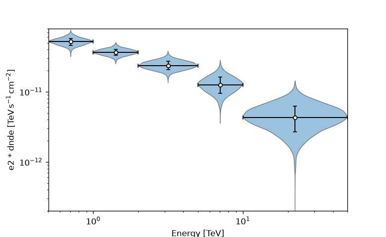

Note
Go to the end to download the full example code or to run this example in your browser via Binder.
Bayesian analysis with nested sampling#
A demonstration of a Bayesian analysis using the nested sampling technique.
Context#
1. Bayesian analysis#
Bayesian inference uses prior knowledge, in the form of a prior distribution, in order to estimate posterior probabilities which we traditionally visualise in the form of corner plots. These distributions contain more information than a maximum likelihood fit as they reveal not only the “best model” but provide a more accurate representation of errors and correlation between parameters. In particular, non-Gaussian degeneracies are complex to estimate with a maximum likelihood approach.
2. Limitations of the Markov Chain Monte Carlo approach#
A well-known approach to estimate this posterior distribution is the Markov Chain Monte Carlo (MCMC). This uses an ensemble of walkers to produce a chain of samples that after a convergence period will reach a stationary state. Once convergence is reached, the successive elements of the chain are samples of the target posterior distribution. However, the weakness of the MCMC approach lies in the “Once convergence” part. If the walkers are started far from the best likelihood region, the convergence time can be long or never reached if the walkers fall in a local minima. The choice of the initialisation point can become critical for complex models with a high number of dimensions and the ability of these walkers to escape a local minimum or to accurately describe a complex likelihood space is not guaranteed.
3. Nested sampling approach#
To overcome these issues, the nested sampling (NS) algorithm has gained traction in physics and astronomy. It is a Monte Carlo algorithm for computing an integral of the likelihood function over the prior model parameter space introduced in Skilling, 2004. The method performs this integral by evolving a collection of points through the parameter space (see recent reviews from Ashton et al., 2022, and Buchner, 2023). Without going into too many details, one important specificity of the NS method is that it starts from the entire parameter space and evolves a collection of live points to map all minima (including multiple modes if any), whereas Markov Chain Monte Carlo methods require an initialisation point and the walkers will explore the local likelihood. The ability of these walkers to escape a local minimum or to accurately describe a complex likelihood space is not guaranteed. This is a fundamental difference with MCMC or Minuit which will only ever probe the vicinity along their minimisation paths and do not have an overview of the global likelihood landscape. The analysis using the NS framework is more CPU time consuming than a standard classical fit, but it provides the full posterior distribution for all parameters, which is out of reach with traditional fitting techniques (N*(N-1)/2 contour plots to generate). In addition, it is more robust to the choice of initialisation, requires less human intervention and is therefore readily integrated in pipeline analysis. In Gammapy, we provide several NS backends: UltraNest and Nautilus. UltraNest is a package that implements the NS algorithm and is used in many astrophysical applications. Nautilus is a more recent implementation of the NS algorithm that exploits neural networks to learn a likelihood function emulator to propose new live points. It is designed to be faster and more efficient than UltraNest, especially for high-dimensional problems. For a nice visualisation of the NS method see here: sampling visualisation. And for a tutorial of UltraNest applied to X-ray fitting with concrete examples and questions see: BXA Tutorial.
See the UltraNest docs here). Note: please cite UltraNest if used for a paper If you are using the “UltraNest” library for a paper, please follow its citation scheme: Cite UltraNest.
See the Nautilus docs here). Note: please cite Nautilus if used for a paper If you are using the “Nautilus” library for a paper, please follow its citation scheme: Cite Nautilus.
Proposed approach#
In this example, we will perform a Bayesian analysis with multiple 1D spectra of the Crab nebula data and investigate their posterior distributions.
Setup#
As usual, we’ll start with some setup …
import matplotlib.pyplot as plt
import numpy as np
import astropy.units as u
from gammapy.datasets import Datasets
from gammapy.datasets import SpectrumDatasetOnOff
from gammapy.modeling.models import (
SkyModel,
UniformPrior,
LogUniformPrior,
)
from gammapy.modeling.sampler import Sampler
from gammapy.estimators import FluxCollectionEstimator
from gammapy.visualization import plot_samples_violin_vs_energy
Loading the spectral datasets#
Here we will load a few Crab 1D spectral data for which we will do a fit.
Model definition#
Now we want to define the spectral model that will be fitted to the data. The Crab spectra will be fitted here with a simple powerlaw for simplicity.
model = SkyModel.create(spectral_model="pl", name="crab")
Warning
Priors definition: Unlike a traditional fit where priors on the parameters are optional, here it is inherent to the Bayesian approach and are therefore mandatory.
In this case we will set (min,max) prior that will define the
boundaries in which the sampling will be performed.
Note that it is usually recommended to use a LogUniformPrior for
the parameters that have a large amplitude range like the
amplitude parameter.
A UniformPrior means that the samples will be drawn with uniform
probability between the (min,max) values in the linear or log space
in the case of a LogUniformPrior.
model.spectral_model.amplitude.prior = LogUniformPrior(min=1e-12, max=1e-10)
model.spectral_model.index.prior = UniformPrior(min=1, max=5)
datasets.models = [model]
print(datasets.models)
DatasetModels
Component 0: SkyModel
Name : crab
Datasets names : None
Spectral model type : PowerLawSpectralModel
Spatial model type :
Temporal model type :
Parameters:
index : 2.000 +/- 0.00
amplitude : 1.00e-12 +/- 0.0e+00 1 / (TeV s cm2)
reference (frozen): 1.000 TeV
Defining the sampler and options#
As for the Fit object, the Sampler object can receive
different backends.
The Sampler comes with “reasonable” default parameters, but you can
change them via the options dictionary, using the backend’s own option names.
Gammapy passes each option to the backend sampler constructor or to its run method.
Here is a short description of the most relevant UltraNest options that you
could change:
min_num_live_points: minimum number of live points throughout the run. More points allow to discover multiple peaks if existing, but is slower. To test the Prior boundaries and for debugging, a lower number (~100) can be used before a production run with more points (~400 or more).frac_remain: the cut-off condition for the integration, set by the maximum allowed fraction of posterior mass left in the live points vs the dead points. High values (e.g., 0.5) are faster and can be used if the posterior distribution is a relatively simple shape. A low value (1e-1, 1e-2) is optimal for finding peaks, but slower.log_dir: directory where the output files will be stored. If set to None, no files will be written. If set to a string, a directory will be created containing the ongoing status of the run and final results. For time consuming analysis, it is highly recommended to use that option to monitor the run and restart it in case of a crash (withresume=True).
More information about the UltraNest options can be found in the UltraNest docs.
More information about the Nautilus options can be found in the Nautilus docs.
A few useful options for Nautilus are:
n_live: number of live points. Equivalent ofmin_num_live_pointsin UltraNest. Due to a different methodology the recommended number of live points should be higher than in UltraNest (1000-3000) while still being faster in high-dimensional problems.f_live: fraction of the evidence from live points to use for convergence. Equivalent offrac_remainin UltraNest.pool: Pool used for parallelization of likelihood calls and sampler calculations.filepath: file path with .hdf5 extension (not directory path) where the output files will be stored.
Backend comparison: For a comparison between the two backends methods, see here. For a gamma-ray analysis, current testing shows that UltraNest can be faster (or equivalent) than Nautilus for low-dimensional problems (1-5 parameters) and Nautilus is faster for high-dimensional problems (>10 parameters) but this of course case specific. If your analysis is dominated by likelihood evaluation time, the parallelisation of the likelihood evaluation in Nautilus (using multiprocessing, just setting pool=nCPUs in the sampler options) has a simpler setup than UltraNest (MPI) and can be more efficient on laptops. Notably, multiprocessing with Nautilus can work in a Jupyter notebook while MPI with UltraNest is not supported in a notebook.
Important note: unlike the MCMC method, you don’t need to define the number of steps for which the sampler will run. The algorithm will automatically stop once a convergence criteria has been reached.
Next we can run the sampler on a given dataset. No options are accepted in the run method.
[ultranest] Sampling 400 live points from prior ...
Mono-modal Volume: ~exp(-4.43) * Expected Volume: exp(0.00) Quality: ok
index : +1.0|************************************************| +5.0
amplitude: +1.0e-12|*********************************** ************| +1.0e-10
Z=-inf(0.00%) | Like=-3782.63..-60.67 [-3782.6311..-324.6396] | it/evals=0/401 eff=0.0000% N=400
Z=-529.1(0.00%) | Like=-519.87..-60.67 [-3782.6311..-324.6396] | it/evals=38/440 eff=95.0000% N=400
Z=-525.1(0.00%) | Like=-519.28..-60.67 [-3782.6311..-324.6396] | it/evals=40/443 eff=93.0233% N=400
Z=-493.0(0.00%) | Like=-486.99..-58.79 [-3782.6311..-324.6396] | it/evals=76/483 eff=91.5663% N=400
Z=-487.6(0.00%) | Like=-481.87..-58.79 [-3782.6311..-324.6396] | it/evals=80/489 eff=89.8876% N=400
Mono-modal Volume: ~exp(-4.84) * Expected Volume: exp(-0.23) Quality: ok
index : +1.0|************************************************| +5.0
amplitude: +1.0e-12|******************************************** ***| +1.0e-10
Z=-479.5(0.00%) | Like=-473.02..-58.79 [-3782.6311..-324.6396] | it/evals=90/500 eff=90.0000% N=400
Z=-457.4(0.00%) | Like=-452.33..-58.79 [-3782.6311..-324.6396] | it/evals=120/533 eff=90.2256% N=400
Z=-428.7(0.00%) | Like=-421.46..-58.79 [-3782.6311..-324.6396] | it/evals=153/573 eff=88.4393% N=400
Z=-422.1(0.00%) | Like=-416.07..-58.79 [-3782.6311..-324.6396] | it/evals=160/581 eff=88.3978% N=400
Mono-modal Volume: ~exp(-4.84) Expected Volume: exp(-0.45) Quality: ok
index : +1.0| ***********************************************| +5.0
amplitude: +1.0e-12|******************************************** ***| +1.0e-10
Z=-396.5(0.00%) | Like=-387.51..-58.79 [-3782.6311..-324.6396] | it/evals=190/618 eff=87.1560% N=400
Z=-383.4(0.00%) | Like=-377.81..-58.79 [-3782.6311..-324.6396] | it/evals=200/629 eff=87.3362% N=400
Z=-360.1(0.00%) | Like=-353.75..-58.79 [-3782.6311..-324.6396] | it/evals=232/669 eff=86.2454% N=400
Z=-353.3(0.00%) | Like=-347.53..-58.79 [-3782.6311..-324.6396] | it/evals=240/678 eff=86.3309% N=400
Mono-modal Volume: ~exp(-4.98) * Expected Volume: exp(-0.67) Quality: ok
index : +1.0| *********************************************| +5.0
amplitude: +1.0e-12| ******************************************* ***| +1.0e-10
Z=-330.1(0.00%) | Like=-323.95..-58.79 [-324.5871..-188.3885] | it/evals=270/714 eff=85.9873% N=400
Z=-323.2(0.00%) | Like=-316.30..-58.79 [-324.5871..-188.3885] | it/evals=280/726 eff=85.8896% N=400
Z=-298.6(0.00%) | Like=-292.70..-58.79 [-324.5871..-188.3885] | it/evals=314/765 eff=86.0274% N=400
Z=-295.9(0.00%) | Like=-287.23..-58.79 [-324.5871..-188.3885] | it/evals=320/772 eff=86.0215% N=400
Z=-272.7(0.00%) | Like=-266.32..-58.79 [-324.5871..-188.3885] | it/evals=355/813 eff=85.9564% N=400
Mono-modal Volume: ~exp(-5.18) * Expected Volume: exp(-0.90) Quality: ok
index : +1.0| ********************************************| +5.0
amplitude: +1.0e-12| ****************************************** * *| +1.0e-10
Z=-271.1(0.00%) | Like=-264.90..-58.79 [-324.5871..-188.3885] | it/evals=360/820 eff=85.7143% N=400
Z=-254.2(0.00%) | Like=-247.76..-58.79 [-324.5871..-188.3885] | it/evals=393/860 eff=85.4348% N=400
Z=-247.9(0.00%) | Like=-241.25..-58.79 [-324.5871..-188.3885] | it/evals=400/869 eff=85.2878% N=400
Z=-233.1(0.00%) | Like=-226.59..-58.79 [-324.5871..-188.3885] | it/evals=432/909 eff=84.8723% N=400
Z=-229.5(0.00%) | Like=-222.95..-58.79 [-324.5871..-188.3885] | it/evals=440/917 eff=85.1064% N=400
Mono-modal Volume: ~exp(-5.36) * Expected Volume: exp(-1.12) Quality: ok
index : +1.0| ******************************************| +5.0
amplitude: +1.0e-12| ***************************************** * *| +1.0e-10
Z=-226.1(0.00%) | Like=-219.62..-58.79 [-324.5871..-188.3885] | it/evals=450/930 eff=84.9057% N=400
Z=-215.8(0.00%) | Like=-209.65..-58.79 [-324.5871..-188.3885] | it/evals=480/968 eff=84.5070% N=400
Z=-204.5(0.00%) | Like=-198.57..-58.79 [-324.5871..-188.3885] | it/evals=508/1006 eff=83.8284% N=400
Z=-201.1(0.00%) | Like=-194.98..-58.79 [-324.5871..-188.3885] | it/evals=520/1022 eff=83.6013% N=400
Mono-modal Volume: ~exp(-5.36) Expected Volume: exp(-1.35) Quality: ok
index : +1.0| *****************************************| +5.0
amplitude: +1.0e-12| ****************************************** *| +1.0e-10
Z=-195.6(0.00%) | Like=-189.71..-58.79 [-324.5871..-188.3885] | it/evals=548/1061 eff=82.9047% N=400
Z=-191.9(0.00%) | Like=-185.87..-58.79 [-188.0777..-126.7718] | it/evals=560/1077 eff=82.7179% N=400
Z=-185.0(0.00%) | Like=-179.31..-58.79 [-188.0777..-126.7718] | it/evals=586/1117 eff=81.7294% N=400
Z=-182.7(0.00%) | Like=-177.00..-58.79 [-188.0777..-126.7718] | it/evals=600/1137 eff=81.4111% N=400
Z=-174.6(0.00%) | Like=-168.37..-58.79 [-188.0777..-126.7718] | it/evals=627/1177 eff=80.6950% N=400
Mono-modal Volume: ~exp(-5.38) * Expected Volume: exp(-1.57) Quality: ok
index : +1.0| *********************************** | +5.0
amplitude: +1.0e-12| *******************************************| +1.0e-10
Z=-173.9(0.00%) | Like=-167.83..-58.79 [-188.0777..-126.7718] | it/evals=630/1181 eff=80.6658% N=400
Z=-172.2(0.00%) | Like=-166.09..-58.79 [-188.0777..-126.7718] | it/evals=640/1197 eff=80.3011% N=400
Z=-167.4(0.00%) | Like=-160.92..-58.79 [-188.0777..-126.7718] | it/evals=668/1237 eff=79.8088% N=400
Z=-164.4(0.00%) | Like=-157.63..-58.79 [-188.0777..-126.7718] | it/evals=680/1255 eff=79.5322% N=400
Z=-156.5(0.00%) | Like=-150.58..-58.79 [-188.0777..-126.7718] | it/evals=711/1295 eff=79.4413% N=400
Mono-modal Volume: ~exp(-6.09) * Expected Volume: exp(-1.80) Quality: ok
index : +1.0| ******************************* | +5.0
amplitude: +1.0e-12| **************************************** | +1.0e-10
Z=-154.3(0.00%) | Like=-147.61..-58.79 [-188.0777..-126.7718] | it/evals=720/1308 eff=79.2952% N=400
Z=-148.1(0.00%) | Like=-141.99..-58.79 [-188.0777..-126.7718] | it/evals=746/1348 eff=78.6920% N=400
Z=-145.8(0.00%) | Like=-139.39..-58.79 [-188.0777..-126.7718] | it/evals=760/1365 eff=78.7565% N=400
Z=-142.2(0.00%) | Like=-135.95..-58.79 [-188.0777..-126.7718] | it/evals=783/1404 eff=77.9880% N=400
Z=-139.0(0.00%) | Like=-132.55..-58.79 [-188.0777..-126.7718] | it/evals=800/1422 eff=78.2779% N=400
Mono-modal Volume: ~exp(-6.27) * Expected Volume: exp(-2.02) Quality: ok
index : +1.0| *************************** +4.0 | +5.0
amplitude: +1.0e-12| ************************************ | +1.0e-10
Z=-137.4(0.00%) | Like=-131.20..-58.79 [-188.0777..-126.7718] | it/evals=810/1434 eff=78.3366% N=400
Z=-132.8(0.00%) | Like=-126.72..-58.79 [-126.7226..-92.2757] | it/evals=840/1470 eff=78.5047% N=400
Z=-126.7(0.00%) | Like=-120.29..-58.79 [-126.7226..-92.2757] | it/evals=872/1509 eff=78.6294% N=400
Z=-125.4(0.00%) | Like=-119.22..-58.79 [-126.7226..-92.2757] | it/evals=880/1519 eff=78.6416% N=400
Mono-modal Volume: ~exp(-6.85) * Expected Volume: exp(-2.25) Quality: ok
index : +1.0| +1.9 *********************** +3.8 | +5.0
amplitude: +1.0e-12| ********************************* | +1.0e-10
Z=-123.1(0.00%) | Like=-116.97..-58.79 [-126.7226..-92.2757] | it/evals=900/1546 eff=78.5340% N=400
Z=-120.5(0.00%) | Like=-114.60..-58.79 [-126.7226..-92.2757] | it/evals=920/1570 eff=78.6325% N=400
Z=-118.1(0.00%) | Like=-111.70..-58.79 [-126.7226..-92.2757] | it/evals=952/1609 eff=78.7428% N=400
Z=-117.0(0.00%) | Like=-110.91..-58.79 [-126.7226..-92.2757] | it/evals=960/1617 eff=78.8825% N=400
Mono-modal Volume: ~exp(-6.95) * Expected Volume: exp(-2.47) Quality: ok
index : +1.0| +2.0 ********************* +3.7 | +5.0
amplitude: +1.0e-12| ****************************** | +1.0e-10
Z=-112.7(0.00%) | Like=-106.18..-58.79 [-126.7226..-92.2757] | it/evals=990/1657 eff=78.7589% N=400
Z=-111.4(0.00%) | Like=-104.54..-58.79 [-126.7226..-92.2757] | it/evals=1000/1669 eff=78.8022% N=400
Z=-107.0(0.00%) | Like=-100.62..-58.79 [-126.7226..-92.2757] | it/evals=1030/1709 eff=78.6860% N=400
Z=-106.0(0.00%) | Like=-99.62..-58.79 [-126.7226..-92.2757] | it/evals=1040/1720 eff=78.7879% N=400
Z=-103.5(0.00%) | Like=-97.13..-58.79 [-126.7226..-92.2757] | it/evals=1068/1759 eff=78.5872% N=400
Mono-modal Volume: ~exp(-7.06) * Expected Volume: exp(-2.70) Quality: ok
index : +1.0| +2.1 ****************** +3.5 | +5.0
amplitude: +1.0e-12| ************************** +7.5e-11 | +1.0e-10
Z=-102.5(0.00%) | Like=-96.31..-58.79 [-126.7226..-92.2757] | it/evals=1080/1781 eff=78.2042% N=400
Z=-100.1(0.00%) | Like=-93.48..-58.79 [-126.7226..-92.2757] | it/evals=1109/1820 eff=78.0986% N=400
Z=-99.0(0.00%) | Like=-92.74..-58.79 [-126.7226..-92.2757] | it/evals=1120/1838 eff=77.8860% N=400
Z=-96.7(0.00%) | Like=-90.57..-58.75 [-92.2661..-74.9577] | it/evals=1151/1878 eff=77.8755% N=400
Z=-96.2(0.00%) | Like=-90.17..-58.75 [-92.2661..-74.9577] | it/evals=1160/1890 eff=77.8523% N=400
Mono-modal Volume: ~exp(-7.25) * Expected Volume: exp(-2.92) Quality: ok
index : +1.0| +2.1 ***************** +3.4 | +5.0
amplitude: +1.0e-12| +2.5e-11 ************************ +7.1e-11 | +1.0e-10
Z=-95.6(0.00%) | Like=-89.32..-58.75 [-92.2661..-74.9577] | it/evals=1170/1902 eff=77.8961% N=400
Z=-93.6(0.00%) | Like=-87.34..-58.75 [-92.2661..-74.9577] | it/evals=1200/1938 eff=78.0234% N=400
Z=-92.2(0.00%) | Like=-85.86..-58.75 [-92.2661..-74.9577] | it/evals=1226/1977 eff=77.7425% N=400
Z=-91.3(0.00%) | Like=-84.63..-58.75 [-92.2661..-74.9577] | it/evals=1240/1999 eff=77.5485% N=400
Mono-modal Volume: ~exp(-7.57) * Expected Volume: exp(-3.15) Quality: ok
index : +1.0| +2.2 **************** +3.3 | +5.0
amplitude: +1.0e-12| +2.6e-11 ********************* +6.8e-11 | +1.0e-10
Z=-89.9(0.00%) | Like=-83.31..-58.75 [-92.2661..-74.9577] | it/evals=1260/2036 eff=77.0171% N=400
Z=-88.5(0.00%) | Like=-82.10..-58.75 [-92.2661..-74.9577] | it/evals=1280/2064 eff=76.9231% N=400
Z=-86.4(0.00%) | Like=-79.99..-58.75 [-92.2661..-74.9577] | it/evals=1312/2103 eff=77.0405% N=400
Z=-85.9(0.00%) | Like=-79.58..-58.75 [-92.2661..-74.9577] | it/evals=1320/2113 eff=77.0578% N=400
Mono-modal Volume: ~exp(-7.75) * Expected Volume: exp(-3.37) Quality: ok
index : +1.0| +2.2 ************* +3.2 | +5.0
amplitude: +1.0e-12| +2.8e-11 ******************* +6.5e-11 | +1.0e-10
Z=-84.3(0.00%) | Like=-77.94..-58.75 [-92.2661..-74.9577] | it/evals=1350/2152 eff=77.0548% N=400
Z=-83.8(0.00%) | Like=-77.38..-58.75 [-92.2661..-74.9577] | it/evals=1360/2164 eff=77.0975% N=400
Z=-82.3(0.00%) | Like=-75.85..-58.75 [-92.2661..-74.9577] | it/evals=1390/2204 eff=77.0510% N=400
Z=-81.9(0.00%) | Like=-75.48..-58.75 [-92.2661..-74.9577] | it/evals=1400/2221 eff=76.8808% N=400
Z=-80.6(0.00%) | Like=-74.47..-58.75 [-74.9164..-66.6603] | it/evals=1433/2261 eff=77.0016% N=400
Mono-modal Volume: ~exp(-7.75) Expected Volume: exp(-3.60) Quality: ok
index : +1.0| +2.3 ************ +3.2 | +5.0
amplitude: +1.0e-12| +3.0e-11 ***************** +6.3e-11 | +1.0e-10
Z=-80.4(0.00%) | Like=-74.08..-58.75 [-74.9164..-66.6603] | it/evals=1440/2270 eff=77.0053% N=400
Z=-79.3(0.00%) | Like=-73.02..-58.75 [-74.9164..-66.6603] | it/evals=1470/2311 eff=76.9231% N=400
Z=-79.0(0.00%) | Like=-72.56..-58.75 [-74.9164..-66.6603] | it/evals=1480/2327 eff=76.8033% N=400
Z=-77.8(0.00%) | Like=-71.34..-58.75 [-74.9164..-66.6603] | it/evals=1509/2367 eff=76.7158% N=400
Z=-77.4(0.00%) | Like=-70.79..-58.75 [-74.9164..-66.6603] | it/evals=1520/2388 eff=76.4588% N=400
Mono-modal Volume: ~exp(-7.75) * Expected Volume: exp(-3.82) Quality: ok
index : +1.0| +2.3 *********** +3.1 | +5.0
amplitude: +1.0e-12| +3.1e-11 *************** +6.0e-11 | +1.0e-10
Z=-77.0(0.00%) | Like=-70.50..-58.75 [-74.9164..-66.6603] | it/evals=1530/2405 eff=76.3092% N=400
Z=-76.2(0.00%) | Like=-69.82..-58.75 [-74.9164..-66.6603] | it/evals=1553/2447 eff=75.8671% N=400
Z=-76.0(0.00%) | Like=-69.67..-58.75 [-74.9164..-66.6603] | it/evals=1560/2456 eff=75.8755% N=400
Z=-75.2(0.00%) | Like=-68.90..-58.75 [-74.9164..-66.6603] | it/evals=1589/2495 eff=75.8473% N=400
Z=-74.9(0.01%) | Like=-68.45..-58.75 [-74.9164..-66.6603] | it/evals=1600/2511 eff=75.7935% N=400
Mono-modal Volume: ~exp(-8.56) * Expected Volume: exp(-4.05) Quality: ok
index : +1.0| +2.3 ********* +3.1 | +5.0
amplitude: +1.0e-12| +3.3e-11 ************* +5.8e-11 | +1.0e-10
Z=-74.4(0.01%) | Like=-67.95..-58.75 [-74.9164..-66.6603] | it/evals=1620/2535 eff=75.8782% N=400
Z=-73.9(0.02%) | Like=-67.52..-58.75 [-74.9164..-66.6603] | it/evals=1640/2558 eff=75.9963% N=400
Z=-73.2(0.03%) | Like=-66.99..-58.75 [-74.9164..-66.6603] | it/evals=1669/2598 eff=75.9327% N=400
Z=-73.0(0.04%) | Like=-66.81..-58.75 [-74.9164..-66.6603] | it/evals=1680/2620 eff=75.6757% N=400
Mono-modal Volume: ~exp(-8.78) * Expected Volume: exp(-4.27) Quality: ok
index : +1.0| +2.4 ********* +3.0 | +5.0
amplitude: +1.0e-12| +3.4e-11 ************* +5.7e-11 | +1.0e-10
Z=-72.5(0.06%) | Like=-66.41..-58.75 [-66.6529..-65.6049] | it/evals=1710/2660 eff=75.6637% N=400
Z=-72.3(0.07%) | Like=-66.02..-58.75 [-66.6529..-65.6049] | it/evals=1720/2671 eff=75.7376% N=400
Z=-71.8(0.12%) | Like=-65.39..-58.75 [-65.4339..-65.3933] | it/evals=1752/2711 eff=75.8113% N=400
Z=-71.6(0.14%) | Like=-65.29..-58.75 [-65.2913..-65.2710] | it/evals=1760/2721 eff=75.8294% N=400
Z=-71.1(0.22%) | Like=-64.70..-58.75 [-64.6982..-64.6913]*| it/evals=1790/2761 eff=75.8153% N=400
Mono-modal Volume: ~exp(-8.78) Expected Volume: exp(-4.50) Quality: ok
index : +1.0| +2.4 ******** +3.0 | +5.0
amplitude: +1.0e-12| +3.5e-11 *********** +5.5e-11 | +1.0e-10
Z=-71.0(0.27%) | Like=-64.62..-58.75 [-64.6164..-64.5983] | it/evals=1800/2777 eff=75.7257% N=400
Z=-70.5(0.42%) | Like=-64.18..-58.75 [-64.1835..-64.1589] | it/evals=1830/2817 eff=75.7137% N=400
Z=-70.4(0.49%) | Like=-64.05..-58.75 [-64.0539..-64.0132] | it/evals=1840/2829 eff=75.7513% N=400
Z=-70.0(0.70%) | Like=-63.72..-58.75 [-63.7509..-63.7240] | it/evals=1868/2869 eff=75.6582% N=400
Z=-69.9(0.82%) | Like=-63.61..-58.75 [-63.6099..-63.6045]*| it/evals=1880/2885 eff=75.6539% N=400
Mono-modal Volume: ~exp(-9.22) * Expected Volume: exp(-4.73) Quality: ok
index : +1.0| +2.4 ******* +2.9 | +5.0
amplitude: +1.0e-12| +3.6e-11 ********** +5.4e-11 | +1.0e-10
Z=-69.7(0.90%) | Like=-63.51..-58.75 [-63.5084..-63.4930] | it/evals=1890/2899 eff=75.6303% N=400
Z=-69.4(1.22%) | Like=-63.12..-58.75 [-63.1286..-63.1164] | it/evals=1917/2938 eff=75.5319% N=400
Z=-69.4(1.25%) | Like=-63.08..-58.75 [-63.0795..-63.0693] | it/evals=1920/2941 eff=75.5608% N=400
Z=-69.1(1.66%) | Like=-62.82..-58.75 [-62.8341..-62.8212] | it/evals=1948/2981 eff=75.4746% N=400
Z=-69.0(1.86%) | Like=-62.71..-58.75 [-62.7059..-62.6757] | it/evals=1960/2996 eff=75.5008% N=400
Mono-modal Volume: ~exp(-9.71) * Expected Volume: exp(-4.95) Quality: ok
index : +1.0| +2.5 ****** +2.9 | +5.0
amplitude: +1.0e-12| +3.7e-11 ********* +5.3e-11 | +1.0e-10
Z=-68.8(2.27%) | Like=-62.51..-58.75 [-62.5094..-62.4579] | it/evals=1980/3018 eff=75.6303% N=400
Z=-68.6(2.75%) | Like=-62.30..-58.75 [-62.2992..-62.2834] | it/evals=2000/3044 eff=75.6430% N=400
Z=-68.4(3.54%) | Like=-62.11..-58.75 [-62.1120..-62.1108]*| it/evals=2028/3083 eff=75.5870% N=400
Z=-68.3(3.87%) | Like=-62.05..-58.75 [-62.0543..-62.0398] | it/evals=2040/3097 eff=75.6396% N=400
Mono-modal Volume: ~exp(-9.71) Expected Volume: exp(-5.18) Quality: ok
index : +1.0| +2.5 ****** +2.9 | +5.0
amplitude: +1.0e-12| +3.7e-11 ******** +5.2e-11 | +1.0e-10
Z=-68.0(4.86%) | Like=-61.82..-58.75 [-61.8158..-61.8113]*| it/evals=2071/3134 eff=75.7498% N=400
Z=-68.0(5.13%) | Like=-61.77..-58.75 [-61.7739..-61.7736]*| it/evals=2080/3145 eff=75.7741% N=400
Z=-67.8(6.12%) | Like=-61.56..-58.75 [-61.5682..-61.5556] | it/evals=2109/3185 eff=75.7271% N=400
Z=-67.7(6.57%) | Like=-61.49..-58.75 [-61.4874..-61.4867]*| it/evals=2120/3198 eff=75.7684% N=400
Z=-67.6(7.77%) | Like=-61.33..-58.75 [-61.3476..-61.3312] | it/evals=2146/3234 eff=75.7234% N=400
Mono-modal Volume: ~exp(-9.73) * Expected Volume: exp(-5.40) Quality: ok
index : +1.0| +2.5 ****** +2.9 | +5.0
amplitude: +1.0e-12| +3.8e-11 ******** +5.1e-11 | +1.0e-10
Z=-67.5(8.43%) | Like=-61.24..-58.75 [-61.2403..-61.2376]*| it/evals=2160/3258 eff=75.5773% N=400
Z=-67.3(10.15%) | Like=-61.05..-58.75 [-61.0521..-61.0357] | it/evals=2191/3298 eff=75.6039% N=400
Z=-67.3(10.71%) | Like=-61.00..-58.75 [-61.0023..-60.9989]*| it/evals=2200/3308 eff=75.6534% N=400
Z=-67.1(12.29%) | Like=-60.85..-58.75 [-60.8497..-60.8482]*| it/evals=2227/3348 eff=75.5427% N=400
Z=-67.0(13.06%) | Like=-60.76..-58.75 [-60.7643..-60.7592]*| it/evals=2240/3364 eff=75.5735% N=400
Mono-modal Volume: ~exp(-10.21) * Expected Volume: exp(-5.63) Quality: ok
index : +1.0| +2.5 ***** +2.8 | +5.0
amplitude: +1.0e-12| +3.9e-11 ******* +5.1e-11 | +1.0e-10
Z=-67.0(13.73%) | Like=-60.73..-58.75 [-60.7260..-60.7260]*| it/evals=2250/3378 eff=75.5541% N=400
Z=-66.9(15.91%) | Like=-60.57..-58.75 [-60.5656..-60.5650]*| it/evals=2280/3413 eff=75.6721% N=400
Z=-66.7(18.19%) | Like=-60.40..-58.75 [-60.4048..-60.4004]*| it/evals=2309/3452 eff=75.6553% N=400
Z=-66.7(19.06%) | Like=-60.36..-58.75 [-60.3627..-60.3488] | it/evals=2320/3465 eff=75.6933% N=400
Mono-modal Volume: ~exp(-10.21) Expected Volume: exp(-5.85) Quality: ok
index : +1.0| +2.5 **** +2.8 | +5.0
amplitude: +1.0e-12| +3.9e-11 ****** +5.0e-11 | +1.0e-10
Z=-66.6(21.12%) | Like=-60.28..-58.75 [-60.2808..-60.2689] | it/evals=2344/3503 eff=75.5398% N=400
Z=-66.5(22.44%) | Like=-60.22..-58.75 [-60.2231..-60.2168]*| it/evals=2360/3523 eff=75.5684% N=400
Z=-66.4(24.33%) | Like=-60.11..-58.75 [-60.1243..-60.1132] | it/evals=2383/3561 eff=75.3875% N=400
Z=-66.4(25.85%) | Like=-60.07..-58.75 [-60.0710..-60.0667]*| it/evals=2400/3586 eff=75.3296% N=400
Z=-66.3(28.24%) | Like=-59.97..-58.75 [-59.9685..-59.9645]*| it/evals=2428/3626 eff=75.2635% N=400
Mono-modal Volume: ~exp(-10.35) * Expected Volume: exp(-6.08) Quality: ok
index : +1.0| +2.5 **** +2.8 | +5.0
amplitude: +1.0e-12| +4.0e-11 ****** +4.9e-11 | +1.0e-10
Z=-66.3(28.44%) | Like=-59.96..-58.75 [-59.9629..-59.9626]*| it/evals=2430/3628 eff=75.2788% N=400
Z=-66.3(29.25%) | Like=-59.94..-58.75 [-59.9361..-59.9342]*| it/evals=2440/3642 eff=75.2622% N=400
Z=-66.2(32.15%) | Like=-59.86..-58.75 [-59.8599..-59.8590]*| it/evals=2469/3682 eff=75.2285% N=400
Z=-66.1(33.12%) | Like=-59.83..-58.75 [-59.8346..-59.8345]*| it/evals=2480/3695 eff=75.2656% N=400
Z=-66.1(35.74%) | Like=-59.75..-58.75 [-59.7455..-59.7421]*| it/evals=2508/3735 eff=75.2024% N=400
Mono-modal Volume: ~exp(-10.67) * Expected Volume: exp(-6.30) Quality: ok
index : +1.0| +2.6 **** +2.8 | +5.0
amplitude: +1.0e-12| +4.0e-11 ***** +4.9e-11 | +1.0e-10
Z=-66.0(36.79%) | Like=-59.70..-58.75 [-59.7037..-59.7030]*| it/evals=2520/3751 eff=75.2014% N=400
Z=-65.9(40.13%) | Like=-59.63..-58.75 [-59.6261..-59.6258]*| it/evals=2556/3790 eff=75.3982% N=400
Z=-65.9(40.49%) | Like=-59.62..-58.75 [-59.6227..-59.6208]*| it/evals=2560/3794 eff=75.4272% N=400
Z=-65.9(43.93%) | Like=-59.55..-58.75 [-59.5508..-59.5461]*| it/evals=2597/3834 eff=75.6261% N=400
Z=-65.8(44.23%) | Like=-59.55..-58.75 [-59.5450..-59.5445]*| it/evals=2600/3838 eff=75.6254% N=400
Mono-modal Volume: ~exp(-10.95) * Expected Volume: exp(-6.53) Quality: ok
index : +1.0| +2.6 **** +2.8 | +5.0
amplitude: +1.0e-12| +4.1e-11 **** +4.8e-11 | +1.0e-10
Z=-65.8(45.11%) | Like=-59.53..-58.75 [-59.5295..-59.5287]*| it/evals=2610/3853 eff=75.5864% N=400
Z=-65.8(47.74%) | Like=-59.49..-58.75 [-59.4874..-59.4865]*| it/evals=2640/3889 eff=75.6664% N=400
Z=-65.7(49.97%) | Like=-59.44..-58.75 [-59.4378..-59.4372]*| it/evals=2666/3928 eff=75.5669% N=400
Z=-65.7(51.21%) | Like=-59.41..-58.75 [-59.4103..-59.4093]*| it/evals=2680/3944 eff=75.6208% N=400
Mono-modal Volume: ~exp(-11.30) * Expected Volume: exp(-6.75) Quality: ok
index : +1.0| +2.6 **** +2.8 | +5.0
amplitude: +1.0e-12| +4.1e-11 **** +4.8e-11 | +1.0e-10
Z=-65.7(52.83%) | Like=-59.37..-58.75 [-59.3668..-59.3660]*| it/evals=2700/3973 eff=75.5668% N=400
Z=-65.6(54.51%) | Like=-59.33..-58.75 [-59.3306..-59.3263]*| it/evals=2720/4000 eff=75.5556% N=400
Z=-65.6(57.16%) | Like=-59.28..-58.75 [-59.2782..-59.2771]*| it/evals=2752/4040 eff=75.6044% N=400
Z=-65.6(57.81%) | Like=-59.27..-58.75 [-59.2679..-59.2679]*| it/evals=2760/4048 eff=75.6579% N=400
Z=-65.5(60.01%) | Like=-59.24..-58.75 [-59.2375..-59.2370]*| it/evals=2787/4091 eff=75.5080% N=400
Mono-modal Volume: ~exp(-11.32) * Expected Volume: exp(-6.98) Quality: ok
index : +1.0| +2.6 ** +2.7 | +5.0
amplitude: +1.0e-12| +4.1e-11 **** +4.7e-11 | +1.0e-10
Z=-65.5(60.23%) | Like=-59.24..-58.75 [-59.2355..-59.2345]*| it/evals=2790/4094 eff=75.5279% N=400
Z=-65.5(60.99%) | Like=-59.22..-58.75 [-59.2224..-59.2223]*| it/evals=2800/4106 eff=75.5532% N=400
Z=-65.5(63.70%) | Like=-59.18..-58.75 [-59.1806..-59.1806]*| it/evals=2836/4144 eff=75.7479% N=400
Z=-65.5(63.99%) | Like=-59.17..-58.75 [-59.1746..-59.1734]*| it/evals=2840/4148 eff=75.7737% N=400
Z=-65.4(65.79%) | Like=-59.15..-58.75 [-59.1539..-59.1519]*| it/evals=2866/4190 eff=75.6201% N=400
Mono-modal Volume: ~exp(-11.50) * Expected Volume: exp(-7.20) Quality: ok
index : +1.0| +2.6 ** +2.7 | +5.0
amplitude: +1.0e-12| +4.2e-11 **** +4.7e-11 | +1.0e-10
Z=-65.4(66.73%) | Like=-59.14..-58.75 [-59.1424..-59.1420]*| it/evals=2880/4208 eff=75.6303% N=400
Z=-65.4(68.92%) | Like=-59.11..-58.75 [-59.1071..-59.1066]*| it/evals=2913/4247 eff=75.7213% N=400
Z=-65.4(69.34%) | Like=-59.10..-58.75 [-59.1029..-59.1027]*| it/evals=2920/4254 eff=75.7654% N=400
[ultranest] Explored until L=-6e+01
[ultranest] Likelihood function evaluations: 4267
[ultranest] logZ = -65.01 +- 0.1029
[ultranest] Effective samples strategy satisfied (ESS = 1330.8, need >400)
[ultranest] Posterior uncertainty strategy is satisfied (KL: 0.46+-0.11 nat, need <0.50 nat)
[ultranest] Evidency uncertainty strategy is satisfied (dlogz=0.28, need <0.5)
[ultranest] logZ error budget: single: 0.12 bs:0.10 tail:0.26 total:0.28 required:<0.50
[ultranest] done iterating.
logZ = -65.029 +- 0.372
single instance: logZ = -65.029 +- 0.115
bootstrapped : logZ = -65.010 +- 0.264
tail : logZ = +- 0.262
insert order U test : converged: True correlation: inf iterations
index : 2.352 │ ▁ ▁▁▁▁▁▂▂▃▃▄▅▆▇▇▆▇▇▆▅▅▅▄▃▃▁▂▁▁▁▁▁▁▁▁ │2.988 2.669 +- 0.085
amplitude : 0.0000000000331│ ▁ ▁▁▁▁▁▁▂▂▃▂▅▅▅▆▇▇▇▆▆▅▃▃▃▂▂▁▁▁▁▁▁▁▁▁▁ │0.0000000000569 0.0000000000444 +- 0.0000000000030
Understanding the outputs#
In the Jupyter notebook, you should be able to see an interactive visualisation of how the parameter space shrinks which starts from the (min,max) shrinks down towards the optimal parameters.
The output above is filled with interesting information. Here we provide a short description of the most relevant information provided above. For more detailed information see the UltraNest docs.
During the sampling
Z=-68.8(0.53%) | Like=-63.96..-58.75 [-63.9570..-63.9539]*| it/evals=640/1068 eff=73.7327% N=300
Some important information here is:
Progress (0.53%): the completed fraction of the integral. This is not a time progress bar. Stays at zero for a good fraction of the run.
Efficiency (eff value) of the sampling: this indicates out of the proposed new points, how many were accepted. If your efficiency is too small (<<1%), maybe you should revise your priors (e.g use a LogUniform prior for the normalisation).
Final outputs
The final lines indicate that all three “convergence” strategies are satisfied (samples, posterior uncertainty, and evidence uncertainty).
logZ = -65.104 +- 0.292
The main goal of the Nested sampling algorithm is to estimate Z (the Bayesian evidence) which is given above together with an uncertainty. In a similar way to deltaLogLike and deltaAIC, deltaLogZ values can be used for model comparison. For more information see : on the use of the evidence for model comparison. An interesting comparison of the efficiency and false discovery rate of model selection with deltaLogLike and deltaLogZ is given in Appendix C of Buchner et al., 2014.
Results stored on disk
if log_dir is set to a name where the results will be stored, then
a directory is created containing many useful results and plots.
A description of these outputs is given in the Ultranest
docs.
Results#
Within a Bayesian analysis, the concept of best-fit has to be viewed differently from what is done in a gradient descent fit.
The output of the Bayesian analysis is the posterior distribution and there is no “best-fit” output. One has to define, based on the posteriors, what we want to consider as “best-fit” and several options are possible:
the mean of the distribution
the median
the lowest likelihood value
By default the DatasetModels will be updated with the mean of
the posterior distributions.
print(result_joint.models)
DatasetModels
Component 0: SkyModel
Name : crab
Datasets names : None
Spectral model type : PowerLawSpectralModel
Spatial model type :
Temporal model type :
Parameters:
index : 2.669 +/- 0.09
amplitude : 4.44e-11 +/- 3.0e-12 1 / (TeV s cm2)
reference (frozen): 1.000 TeV
The Sampler class returns a very rich dictionary.
The most “standard” information about the posterior distributions can
be found in :
print(result_joint.sampler_results["posterior"])
{'mean': [2.6688732658295167, 4.4440348446841814e-11], 'stdev': [0.08523245800389989, 3.043092930188688e-12], 'median': [2.6660625252079218, 4.4415112550179774e-11], 'errlo': [2.5861917189540535, 4.1443643347972386e-11], 'errup': [2.7552843083567407, 4.742038972380205e-11], 'information_gain_bits': [2.6884296981182922, 3.0947239410158804]}
Besides mean, errors, etc, an interesting value is the
information gain which estimates how much the posterior
distribution has shrunk with respect to the prior (i.e. how much
we’ve learned). A value < 1 means that the parameter is poorly
constrained within the prior range (we haven’t learned much with respect to our prior assumption).
For a physical interpretation of the information gain see this
example.
The SamplerResult dictionary contains also other interesting
information :
print(result_joint.sampler_results.keys())
dict_keys(['niter', 'logz', 'logzerr', 'logz_bs', 'logz_single', 'logzerr_tail', 'logzerr_bs', 'ess', 'H', 'Herr', 'posterior', 'weighted_samples', 'samples', 'maximum_likelihood', 'ncall', 'paramnames', 'logzerr_single', 'insertion_order_MWW_test'])
Of particular interest, the samples used in the process to approximate the posterior distribution can be accessed via :
for i, n in enumerate(model.parameters.free_parameters.names):
s = result_joint.samples[:, i]
fig, ax = plt.subplots()
ax.hist(s, bins=30)
ax.axvline(np.mean(s), ls="--", color="red")
ax.set_xlabel(n)
plt.show()


While the above plots are interesting, the real strength of the Bayesian analysis is to visualise all parameters correlations which is usually done using “corner plots”. Ultranest corner plot function is a wrapper around the corner package. See the above link for optional keywords. Other packages exist for corner plots, like chainconsumer which is discussed later in this tutorial.
from ultranest.plot import cornerplot
cornerplot(
result_joint.sampler_results,
plot_datapoints=True,
plot_density=True,
bins=20,
title_fmt=".2e",
smooth=False,
)
plt.show()

Spectral model error band from samples#
To compute the spectral error band (“butterfly plots”), we will directly use the samples of the posterior distribution. This is more robust as compared to the traditional method of using the covariance matrix of the parameters which implicitly assumes Gaussian errors while for the posterior distribution there is no shape assumed. This difference can become significant when the parameter errors are non-Gaussian. For this we will need to convert the list of samples back to the spectral model parameters with the relevant units (e.g. normalisation units).
def get_samples_from_posterior(spectral_model, results):
"""
Create a list of spectral parameters with correct units
from the unitless parameters returned by the sampler.
"""
n_samples = results.samples.shape[0]
samples = []
for p in spectral_model.parameters:
try:
idx = spectral_model.parameters.free_unique_parameters.index(p)
samples.append(results.samples[:, idx] * p.unit)
except ValueError:
samples.append(np.ones(n_samples) * p.quantity)
return samples
samples = get_samples_from_posterior(datasets.models[0].spectral_model, result_joint)
Next we can provide these samples to the plot_error
method.

Individual run analysis#
Now we’ll analyse several Crab runs individually so that we can compare them.
result_0 = sampler.run(datasets[0])
result_1 = sampler.run(datasets[1])
result_2 = sampler.run(datasets[2])
[ultranest] Sampling 400 live points from prior ...
Mono-modal Volume: ~exp(-4.40) * Expected Volume: exp(0.00) Quality: ok
index : +1.0|************************************************| +5.0
amplitude: +1.0e-12|*************************** ****** *** * *******| +1.0e-10
Z=-inf(0.00%) | Like=-1855.30..-21.29 [-1855.3010..-108.6062] | it/evals=0/401 eff=0.0000% N=400
Z=-177.7(0.00%) | Like=-172.78..-21.29 [-1855.3010..-108.6062] | it/evals=40/444 eff=90.9091% N=400
Z=-167.1(0.00%) | Like=-162.18..-21.29 [-1855.3010..-108.6062] | it/evals=80/487 eff=91.9540% N=400
Mono-modal Volume: ~exp(-4.86) * Expected Volume: exp(-0.23) Quality: ok
index : +1.0|************************************************| +5.0
amplitude: +1.0e-12|************************** *********** * *******| +1.0e-10
Z=-163.4(0.00%) | Like=-157.82..-21.29 [-1855.3010..-108.6062] | it/evals=90/498 eff=91.8367% N=400
Z=-155.8(0.00%) | Like=-150.06..-21.29 [-1855.3010..-108.6062] | it/evals=120/533 eff=90.2256% N=400
Z=-142.5(0.00%) | Like=-136.73..-21.29 [-1855.3010..-108.6062] | it/evals=160/581 eff=88.3978% N=400
Mono-modal Volume: ~exp(-4.86) Expected Volume: exp(-0.45) Quality: ok
index : +1.0|************************************************| +5.0
amplitude: +1.0e-12|**************************************** ****** | +1.0e-10
Z=-130.9(0.00%) | Like=-125.68..-21.29 [-1855.3010..-108.6062] | it/evals=200/634 eff=85.4701% N=400
Z=-120.5(0.00%) | Like=-115.01..-20.76 [-1855.3010..-108.6062] | it/evals=240/689 eff=83.0450% N=400
Mono-modal Volume: ~exp(-5.30) * Expected Volume: exp(-0.67) Quality: ok
index : +1.0| **********************************************| +5.0
amplitude: +1.0e-12| ************************************* * ****** | +1.0e-10
Z=-113.4(0.00%) | Like=-108.60..-20.76 [-108.6000..-68.5733] | it/evals=270/730 eff=81.8182% N=400
Z=-111.5(0.00%) | Like=-106.64..-20.76 [-108.6000..-68.5733] | it/evals=280/742 eff=81.8713% N=400
Z=-103.2(0.00%) | Like=-97.86..-20.76 [-108.6000..-68.5733] | it/evals=320/792 eff=81.6327% N=400
Mono-modal Volume: ~exp(-5.30) Expected Volume: exp(-0.90) Quality: ok
index : +1.0| ********************************************| +5.0
amplitude: +1.0e-12| ************************************ ** **** | +1.0e-10
Z=-93.6(0.00%) | Like=-88.58..-20.52 [-108.6000..-68.5733] | it/evals=360/836 eff=82.5688% N=400
Z=-88.1(0.00%) | Like=-83.21..-20.52 [-108.6000..-68.5733] | it/evals=400/890 eff=81.6327% N=400
Z=-83.6(0.00%) | Like=-78.63..-20.52 [-108.6000..-68.5733] | it/evals=440/939 eff=81.6327% N=400
Mono-modal Volume: ~exp(-5.51) * Expected Volume: exp(-1.12) Quality: ok
index : +1.0| ******************************************| +5.0
amplitude: +1.0e-12| ************************************** * | +1.0e-10
Z=-82.6(0.00%) | Like=-77.82..-20.52 [-108.6000..-68.5733] | it/evals=450/951 eff=81.6697% N=400
Z=-79.5(0.00%) | Like=-74.01..-20.52 [-108.6000..-68.5733] | it/evals=480/998 eff=80.2676% N=400
Z=-75.8(0.00%) | Like=-70.95..-20.52 [-108.6000..-68.5733] | it/evals=520/1059 eff=78.9074% N=400
Mono-modal Volume: ~exp(-5.62) * Expected Volume: exp(-1.35) Quality: ok
index : +1.0| *************************************** | +5.0
amplitude: +1.0e-12| *********************************** * | +1.0e-10
Z=-73.8(0.00%) | Like=-68.84..-20.52 [-108.6000..-68.5733] | it/evals=540/1082 eff=79.1789% N=400
Z=-72.5(0.00%) | Like=-67.79..-20.52 [-68.5293..-46.2879] | it/evals=560/1111 eff=78.7623% N=400
Z=-69.3(0.00%) | Like=-64.35..-20.52 [-68.5293..-46.2879] | it/evals=600/1172 eff=77.7202% N=400
Mono-modal Volume: ~exp(-5.62) Expected Volume: exp(-1.57) Quality: ok
index : +1.0| ********************************* | +5.0
amplitude: +1.0e-12| ********************************** +7.9e-11| +1.0e-10
Z=-66.7(0.00%) | Like=-61.58..-20.48 [-68.5293..-46.2879] | it/evals=640/1229 eff=77.2014% N=400
Z=-63.4(0.00%) | Like=-58.18..-20.48 [-68.5293..-46.2879] | it/evals=680/1288 eff=76.5766% N=400
Mono-modal Volume: ~exp(-6.05) * Expected Volume: exp(-1.80) Quality: ok
index : +1.0| ***************************** +4.1 | +5.0
amplitude: +1.0e-12| ******************************* +7.3e-11 | +1.0e-10
Z=-59.7(0.00%) | Like=-54.57..-20.48 [-68.5293..-46.2879] | it/evals=720/1339 eff=76.6773% N=400
Z=-56.8(0.00%) | Like=-51.42..-20.48 [-68.5293..-46.2879] | it/evals=760/1394 eff=76.4588% N=400
Z=-53.6(0.00%) | Like=-48.16..-20.48 [-68.5293..-46.2879] | it/evals=799/1463 eff=75.1646% N=400
Z=-53.5(0.00%) | Like=-48.07..-20.48 [-68.5293..-46.2879] | it/evals=800/1464 eff=75.1880% N=400
Mono-modal Volume: ~exp(-6.33) * Expected Volume: exp(-2.02) Quality: ok
index : +1.0| ************************* +3.8 | +5.0
amplitude: +1.0e-12| ***************************** +6.9e-11 | +1.0e-10
Z=-52.8(0.00%) | Like=-47.36..-20.48 [-68.5293..-46.2879] | it/evals=810/1474 eff=75.4190% N=400
Z=-51.1(0.00%) | Like=-45.93..-20.48 [-46.2846..-33.9991] | it/evals=840/1509 eff=75.7439% N=400
Z=-49.0(0.00%) | Like=-43.76..-20.48 [-46.2846..-33.9991] | it/evals=880/1566 eff=75.4717% N=400
Mono-modal Volume: ~exp(-6.33) Expected Volume: exp(-2.25) Quality: ok
index : +1.0| ********************** +3.6 | +5.0
amplitude: +1.0e-12| ************************** +6.5e-11 | +1.0e-10
Z=-47.1(0.00%) | Like=-41.73..-20.48 [-46.2846..-33.9991] | it/evals=920/1619 eff=75.4717% N=400
Z=-45.2(0.00%) | Like=-39.73..-20.48 [-46.2846..-33.9991] | it/evals=960/1678 eff=75.1174% N=400
Mono-modal Volume: ~exp(-6.81) * Expected Volume: exp(-2.47) Quality: ok
index : +1.0| +1.9 ******************* +3.5 | +5.0
amplitude: +1.0e-12| *********************** +6.2e-11 | +1.0e-10
Z=-43.9(0.00%) | Like=-38.52..-20.48 [-46.2846..-33.9991] | it/evals=990/1724 eff=74.7734% N=400
Z=-43.4(0.00%) | Like=-37.87..-20.48 [-46.2846..-33.9991] | it/evals=1000/1737 eff=74.7943% N=400
Z=-41.6(0.00%) | Like=-36.26..-20.48 [-46.2846..-33.9991] | it/evals=1040/1794 eff=74.6055% N=400
Mono-modal Volume: ~exp(-7.05) * Expected Volume: exp(-2.70) Quality: ok
index : +1.0| +2.0 ****************** +3.4 | +5.0
amplitude: +1.0e-12| ********************* +5.8e-11 | +1.0e-10
Z=-40.1(0.00%) | Like=-34.73..-20.48 [-46.2846..-33.9991] | it/evals=1080/1855 eff=74.2268% N=400
Z=-38.8(0.00%) | Like=-33.39..-20.48 [-33.9828..-27.8232] | it/evals=1120/1908 eff=74.2706% N=400
Z=-37.7(0.00%) | Like=-32.41..-20.48 [-33.9828..-27.8232] | it/evals=1160/1961 eff=74.3113% N=400
Mono-modal Volume: ~exp(-7.42) * Expected Volume: exp(-2.92) Quality: ok
index : +1.0| +2.0 **************** +3.3 | +5.0
amplitude: +1.0e-12| ******************* +5.5e-11 | +1.0e-10
Z=-37.4(0.00%) | Like=-32.08..-20.48 [-33.9828..-27.8232] | it/evals=1170/1973 eff=74.3802% N=400
Z=-36.6(0.00%) | Like=-31.23..-20.48 [-33.9828..-27.8232] | it/evals=1200/2019 eff=74.1198% N=400
Z=-35.6(0.01%) | Like=-30.22..-20.48 [-33.9828..-27.8232] | it/evals=1240/2077 eff=73.9416% N=400
Mono-modal Volume: ~exp(-7.42) Expected Volume: exp(-3.15) Quality: ok
index : +1.0| +2.1 *************** +3.2 | +5.0
amplitude: +1.0e-12| **************** +5.2e-11 | +1.0e-10
Z=-34.6(0.01%) | Like=-29.13..-20.48 [-33.9828..-27.8232] | it/evals=1280/2131 eff=73.9457% N=400
Z=-33.7(0.03%) | Like=-28.28..-20.48 [-33.9828..-27.8232] | it/evals=1320/2188 eff=73.8255% N=400
Mono-modal Volume: ~exp(-7.84) * Expected Volume: exp(-3.37) Quality: ok
index : +1.0| +2.1 ************* +3.1 | +5.0
amplitude: +1.0e-12| *************** +5.0e-11 | +1.0e-10
Z=-33.1(0.06%) | Like=-27.71..-20.48 [-27.8113..-27.2277] | it/evals=1350/2230 eff=73.7705% N=400
Z=-32.9(0.08%) | Like=-27.57..-20.48 [-27.8113..-27.2277] | it/evals=1360/2242 eff=73.8328% N=400
Z=-32.3(0.15%) | Like=-27.01..-20.48 [-27.0093..-27.0065]*| it/evals=1400/2303 eff=73.5681% N=400
Mono-modal Volume: ~exp(-7.84) Expected Volume: exp(-3.60) Quality: ok
index : +1.0| +2.2 *********** +3.0 | +5.0
amplitude: +1.0e-12| ************** +4.9e-11 | +1.0e-10
Z=-31.7(0.27%) | Like=-26.36..-20.48 [-26.3644..-26.3636]*| it/evals=1440/2362 eff=73.3945% N=400
Z=-31.2(0.46%) | Like=-25.85..-20.47 [-25.8663..-25.8475] | it/evals=1480/2417 eff=73.3763% N=400
Z=-30.7(0.73%) | Like=-25.50..-20.46 [-25.5017..-25.4458] | it/evals=1520/2475 eff=73.2530% N=400
Mono-modal Volume: ~exp(-8.36) * Expected Volume: exp(-3.82) Quality: ok
index : +1.0| +2.2 ********** +3.0 | +5.0
amplitude: +1.0e-12| ************* +4.7e-11 | +1.0e-10
Z=-30.6(0.80%) | Like=-25.30..-20.46 [-25.2961..-25.2934]*| it/evals=1530/2490 eff=73.2057% N=400
Z=-30.3(1.12%) | Like=-24.95..-20.46 [-24.9537..-24.9440]*| it/evals=1560/2522 eff=73.5156% N=400
Z=-29.9(1.70%) | Like=-24.54..-20.46 [-24.5544..-24.5385] | it/evals=1600/2576 eff=73.5294% N=400
Mono-modal Volume: ~exp(-8.51) * Expected Volume: exp(-4.05) Quality: ok
index : +1.0| +2.2 ********** +2.9 | +5.0
amplitude: +1.0e-12| +2.4e-11 *********** +4.6e-11 | +1.0e-10
Z=-29.7(2.02%) | Like=-24.40..-20.46 [-24.4007..-24.3947]*| it/evals=1620/2605 eff=73.4694% N=400
Z=-29.5(2.41%) | Like=-24.12..-20.46 [-24.1211..-24.1196]*| it/evals=1640/2632 eff=73.4767% N=400
Z=-29.2(3.34%) | Like=-23.86..-20.46 [-23.8827..-23.8608] | it/evals=1680/2682 eff=73.6196% N=400
Mono-modal Volume: ~exp(-8.88) * Expected Volume: exp(-4.27) Quality: ok
index : +1.0| +2.3 ******** +2.9 | +5.0
amplitude: +1.0e-12| +2.6e-11 *********** +4.4e-11 | +1.0e-10
Z=-29.0(4.23%) | Like=-23.60..-20.46 [-23.6015..-23.6010]*| it/evals=1710/2730 eff=73.3906% N=400
Z=-28.9(4.59%) | Like=-23.52..-20.46 [-23.5510..-23.5223] | it/evals=1720/2743 eff=73.4102% N=400
Z=-28.6(6.09%) | Like=-23.25..-20.46 [-23.2512..-23.2477]*| it/evals=1760/2792 eff=73.5786% N=400
Mono-modal Volume: ~exp(-8.88) Expected Volume: exp(-4.50) Quality: ok
index : +1.0| +2.3 ******** +2.9 | +5.0
amplitude: +1.0e-12| +2.6e-11 ********* +4.3e-11 | +1.0e-10
Z=-28.4(7.79%) | Like=-22.96..-20.46 [-22.9754..-22.9567] | it/evals=1800/2842 eff=73.7101% N=400
Z=-28.1(9.95%) | Like=-22.60..-20.46 [-22.6015..-22.5970]*| it/evals=1840/2904 eff=73.4824% N=400
Z=-27.9(12.73%) | Like=-22.35..-20.46 [-22.3620..-22.3512] | it/evals=1880/2954 eff=73.6100% N=400
Mono-modal Volume: ~exp(-9.32) * Expected Volume: exp(-4.73) Quality: ok
index : +1.0| +2.3 ****** +2.8 | +5.0
amplitude: +1.0e-12| +2.7e-11 ******** +4.2e-11 | +1.0e-10
Z=-27.8(13.47%) | Like=-22.29..-20.46 [-22.2894..-22.2806]*| it/evals=1890/2970 eff=73.5409% N=400
Z=-27.7(15.74%) | Like=-22.16..-20.46 [-22.1601..-22.1594]*| it/evals=1920/3005 eff=73.7044% N=400
Z=-27.5(18.94%) | Like=-22.00..-20.46 [-22.0037..-22.0033]*| it/evals=1960/3055 eff=73.8230% N=400
Mono-modal Volume: ~exp(-9.32) Expected Volume: exp(-4.95) Quality: ok
index : +1.0| +2.4 ****** +2.8 | +5.0
amplitude: +1.0e-12| +2.8e-11 ******* +4.1e-11 | +1.0e-10
Z=-27.3(22.30%) | Like=-21.87..-20.46 [-21.8745..-21.8740]*| it/evals=2000/3112 eff=73.7463% N=400
Z=-27.2(25.93%) | Like=-21.75..-20.46 [-21.7505..-21.7494]*| it/evals=2040/3170 eff=73.6462% N=400
Mono-modal Volume: ~exp(-9.32) Expected Volume: exp(-5.18) Quality: ok
index : +1.0| +2.4 ****** +2.8 | +5.0
amplitude: +1.0e-12| +2.9e-11 ******* +4.0e-11 | +1.0e-10
Z=-27.0(29.57%) | Like=-21.60..-20.46 [-21.6198..-21.6048] | it/evals=2080/3226 eff=73.6023% N=400
Z=-26.9(33.19%) | Like=-21.47..-20.46 [-21.4664..-21.4569]*| it/evals=2120/3278 eff=73.6623% N=400
Mono-modal Volume: ~exp(-9.47) * Expected Volume: exp(-5.40) Quality: ok
index : +1.0| +2.4 ***** +2.7 | +5.0
amplitude: +1.0e-12| +2.9e-11 ****** +3.9e-11 | +1.0e-10
Z=-26.8(36.89%) | Like=-21.38..-20.46 [-21.3782..-21.3772]*| it/evals=2160/3339 eff=73.4944% N=400
Z=-26.7(40.60%) | Like=-21.28..-20.46 [-21.2847..-21.2846]*| it/evals=2200/3399 eff=73.3578% N=400
Z=-26.6(44.29%) | Like=-21.19..-20.46 [-21.1935..-21.1929]*| it/evals=2240/3457 eff=73.2745% N=400
Mono-modal Volume: ~exp(-9.96) * Expected Volume: exp(-5.63) Quality: ok
index : +1.0| +2.4 **** +2.7 | +5.0
amplitude: +1.0e-12| +3.0e-11 ****** +3.9e-11 | +1.0e-10
Z=-26.6(45.11%) | Like=-21.17..-20.46 [-21.1740..-21.1714]*| it/evals=2250/3470 eff=73.2899% N=400
Z=-26.5(47.97%) | Like=-21.11..-20.46 [-21.1120..-21.1114]*| it/evals=2280/3510 eff=73.3119% N=400
Z=-26.5(51.53%) | Like=-21.04..-20.46 [-21.0381..-21.0377]*| it/evals=2320/3569 eff=73.2092% N=400
Mono-modal Volume: ~exp(-10.11) * Expected Volume: exp(-5.85) Quality: ok
index : +1.0| +2.4 **** +2.7 | +5.0
amplitude: +1.0e-12| +3.0e-11 ***** +3.8e-11 | +1.0e-10
Z=-26.4(53.34%) | Like=-21.00..-20.46 [-21.0037..-21.0024]*| it/evals=2340/3595 eff=73.2394% N=400
Z=-26.4(55.07%) | Like=-20.99..-20.46 [-20.9876..-20.9867]*| it/evals=2360/3624 eff=73.2010% N=400
Z=-26.3(58.39%) | Like=-20.94..-20.46 [-20.9412..-20.9389]*| it/evals=2400/3683 eff=73.1039% N=400
Mono-modal Volume: ~exp(-10.52) * Expected Volume: exp(-6.08) Quality: ok
index : +1.0| +2.5 **** +2.7 | +5.0
amplitude: +1.0e-12| +3.1e-11 **** +3.8e-11 | +1.0e-10
Z=-26.3(60.75%) | Like=-20.90..-20.46 [-20.8991..-20.8984]*| it/evals=2430/3733 eff=72.9073% N=400
Z=-26.3(61.52%) | Like=-20.89..-20.46 [-20.8930..-20.8924]*| it/evals=2440/3747 eff=72.9011% N=400
Z=-26.2(64.49%) | Like=-20.85..-20.46 [-20.8458..-20.8431]*| it/evals=2480/3795 eff=73.0486% N=400
Mono-modal Volume: ~exp(-10.52) Expected Volume: exp(-6.30) Quality: ok
index : +1.0| +2.5 *** +2.7 | +5.0
amplitude: +1.0e-12| +3.1e-11 **** +3.7e-11 | +1.0e-10
Z=-26.2(67.27%) | Like=-20.81..-20.46 [-20.8128..-20.8126]*| it/evals=2520/3857 eff=72.8956% N=400
Z=-26.2(69.90%) | Like=-20.76..-20.46 [-20.7624..-20.7605]*| it/evals=2560/3912 eff=72.8929% N=400
[ultranest] Explored until L=-2e+01
[ultranest] Likelihood function evaluations: 3914
[ultranest] logZ = -25.77 +- 0.06418
[ultranest] Effective samples strategy satisfied (ESS = 1303.9, need >400)
[ultranest] Posterior uncertainty strategy is satisfied (KL: 0.46+-0.06 nat, need <0.50 nat)
[ultranest] Evidency uncertainty strategy is satisfied (dlogz=0.27, need <0.5)
[ultranest] logZ error budget: single: 0.11 bs:0.06 tail:0.26 total:0.27 required:<0.50
[ultranest] done iterating.
logZ = -25.804 +- 0.301
single instance: logZ = -25.804 +- 0.105
bootstrapped : logZ = -25.770 +- 0.147
tail : logZ = +- 0.262
insert order U test : converged: True correlation: inf iterations
index : 2.09 │ ▁▁▁▁▁▁▁▁▂▂▂▃▄▅▆▆▆▇▇▅▄▅▃▃▂▂▁▁▁▁▁▁▁ ▁ │3.13 2.57 +- 0.12
amplitude : 0.0000000000214│ ▁▁▁▁▁▁▁▂▃▃▄▅▆▇▇▆▇▆▆▄▅▄▂▂▂▂▁▁▁▁▁▁▁▁▁ ▁ │0.0000000000510 0.0000000000342 +- 0.0000000000037
[ultranest] Sampling 400 live points from prior ...
Mono-modal Volume: ~exp(-4.39) * Expected Volume: exp(0.00) Quality: ok
index : +1.0|************************************************| +5.0
amplitude: +1.0e-12|************************ ***** ************** **| +1.0e-10
Z=-inf(0.00%) | Like=-848.50..-19.62 [-848.4956..-130.9412] | it/evals=0/401 eff=0.0000% N=400
Z=-219.3(0.00%) | Like=-213.86..-19.62 [-848.4956..-130.9412] | it/evals=40/445 eff=88.8889% N=400
Z=-204.2(0.00%) | Like=-199.18..-19.55 [-848.4956..-130.9412] | it/evals=80/491 eff=87.9121% N=400
Mono-modal Volume: ~exp(-4.50) * Expected Volume: exp(-0.23) Quality: ok
index : +1.0|************************************************| +5.0
amplitude: +1.0e-12|************************ ***** ************** **| +1.0e-10
Z=-201.7(0.00%) | Like=-195.91..-19.55 [-848.4956..-130.9412] | it/evals=90/501 eff=89.1089% N=400
Z=-190.4(0.00%) | Like=-184.41..-19.55 [-848.4956..-130.9412] | it/evals=120/533 eff=90.2256% N=400
Z=-174.9(0.00%) | Like=-169.35..-19.55 [-848.4956..-130.9412] | it/evals=160/579 eff=89.3855% N=400
Mono-modal Volume: ~exp(-4.89) * Expected Volume: exp(-0.45) Quality: ok
index : +1.0|************************************************| +5.0
amplitude: +1.0e-12|************************ ***** ************** **| +1.0e-10
Z=-168.6(0.00%) | Like=-162.56..-19.55 [-848.4956..-130.9412] | it/evals=180/603 eff=88.6700% N=400
Z=-162.7(0.00%) | Like=-157.05..-19.55 [-848.4956..-130.9412] | it/evals=200/625 eff=88.8889% N=400
Z=-151.9(0.00%) | Like=-146.23..-19.55 [-848.4956..-130.9412] | it/evals=240/670 eff=88.8889% N=400
Mono-modal Volume: ~exp(-5.01) * Expected Volume: exp(-0.67) Quality: ok
index : +1.0| **********************************************| +5.0
amplitude: +1.0e-12| ***********************************************| +1.0e-10
Z=-141.8(0.00%) | Like=-135.79..-19.55 [-848.4956..-130.9412] | it/evals=270/708 eff=87.6623% N=400
Z=-138.1(0.00%) | Like=-131.65..-19.55 [-848.4956..-130.9412] | it/evals=280/719 eff=87.7743% N=400
Z=-125.5(0.00%) | Like=-120.13..-19.55 [-130.5051..-64.4724] | it/evals=320/768 eff=86.9565% N=400
Mono-modal Volume: ~exp(-5.01) Expected Volume: exp(-0.90) Quality: ok
index : +1.0| ********************************************| +5.0
amplitude: +1.0e-12| *********************************************| +1.0e-10
Z=-113.6(0.00%) | Like=-107.87..-19.55 [-130.5051..-64.4724] | it/evals=360/812 eff=87.3786% N=400
Z=-99.6(0.00%) | Like=-94.32..-19.55 [-130.5051..-64.4724] | it/evals=400/864 eff=86.2069% N=400
Z=-90.7(0.00%) | Like=-84.59..-19.55 [-130.5051..-64.4724] | it/evals=440/912 eff=85.9375% N=400
Mono-modal Volume: ~exp(-5.50) * Expected Volume: exp(-1.12) Quality: ok
index : +1.0| ******************************************| +5.0
amplitude: +1.0e-12| *******************************************| +1.0e-10
Z=-88.8(0.00%) | Like=-83.52..-19.55 [-130.5051..-64.4724] | it/evals=450/925 eff=85.7143% N=400
Z=-81.8(0.00%) | Like=-75.94..-19.55 [-130.5051..-64.4724] | it/evals=480/960 eff=85.7143% N=400
Z=-74.8(0.00%) | Like=-69.29..-19.55 [-130.5051..-64.4724] | it/evals=520/1008 eff=85.5263% N=400
Mono-modal Volume: ~exp(-5.69) * Expected Volume: exp(-1.35) Quality: ok
index : +1.0| ****************************************| +5.0
amplitude: +1.0e-12| ******************************************| +1.0e-10
Z=-72.0(0.00%) | Like=-66.23..-19.55 [-130.5051..-64.4724] | it/evals=540/1033 eff=85.3081% N=400
Z=-69.3(0.00%) | Like=-64.14..-19.55 [-64.4637..-43.3531] | it/evals=560/1058 eff=85.1064% N=400
Z=-66.2(0.00%) | Like=-61.18..-19.55 [-64.4637..-43.3531] | it/evals=600/1108 eff=84.7458% N=400
Mono-modal Volume: ~exp(-6.02) * Expected Volume: exp(-1.57) Quality: ok
index : +1.0| ***************************************| +5.0
amplitude: +1.0e-12| *****************************************| +1.0e-10
Z=-63.5(0.00%) | Like=-58.13..-19.55 [-64.4637..-43.3531] | it/evals=630/1150 eff=84.0000% N=400
Z=-62.6(0.00%) | Like=-57.63..-19.55 [-64.4637..-43.3531] | it/evals=640/1164 eff=83.7696% N=400
Z=-59.2(0.00%) | Like=-54.04..-19.55 [-64.4637..-43.3531] | it/evals=680/1214 eff=83.5381% N=400
Mono-modal Volume: ~exp(-6.18) * Expected Volume: exp(-1.80) Quality: ok
index : +1.0| ************************************ | +5.0
amplitude: +1.0e-12| ***************************************| +1.0e-10
Z=-55.7(0.00%) | Like=-50.35..-19.50 [-64.4637..-43.3531] | it/evals=720/1267 eff=83.0450% N=400
Z=-52.9(0.00%) | Like=-47.81..-19.43 [-64.4637..-43.3531] | it/evals=760/1321 eff=82.5190% N=400
Z=-50.5(0.00%) | Like=-45.50..-19.43 [-64.4637..-43.3531] | it/evals=800/1368 eff=82.6446% N=400
Mono-modal Volume: ~exp(-6.22) * Expected Volume: exp(-2.02) Quality: ok
index : +1.0| +1.9 ****************************** | +5.0
amplitude: +1.0e-12| **************************************| +1.0e-10
Z=-49.9(0.00%) | Like=-44.75..-19.43 [-64.4637..-43.3531] | it/evals=810/1382 eff=82.4847% N=400
Z=-48.1(0.00%) | Like=-42.94..-19.43 [-43.3270..-31.8575] | it/evals=840/1420 eff=82.3529% N=400
Z=-45.9(0.00%) | Like=-40.81..-19.42 [-43.3270..-31.8575] | it/evals=880/1475 eff=81.8605% N=400
Mono-modal Volume: ~exp(-6.35) * Expected Volume: exp(-2.25) Quality: ok
index : +1.0| +2.0 **************************** | +5.0
amplitude: +1.0e-12| +2.5e-11 *************************************| +1.0e-10
Z=-45.1(0.00%) | Like=-39.98..-19.42 [-43.3270..-31.8575] | it/evals=900/1504 eff=81.5217% N=400
Z=-44.3(0.00%) | Like=-39.13..-19.42 [-43.3270..-31.8575] | it/evals=920/1528 eff=81.5603% N=400
Z=-42.5(0.00%) | Like=-37.29..-19.42 [-43.3270..-31.8575] | it/evals=960/1579 eff=81.4249% N=400
Mono-modal Volume: ~exp(-6.35) Expected Volume: exp(-2.47) Quality: ok
index : +1.0| +2.1 ************************* +4.0 | +5.0
amplitude: +1.0e-12| +2.7e-11 ********************************** | +1.0e-10
Z=-41.0(0.00%) | Like=-35.72..-19.42 [-43.3270..-31.8575] | it/evals=1000/1635 eff=80.9717% N=400
Z=-39.6(0.00%) | Like=-34.19..-19.23 [-43.3270..-31.8575] | it/evals=1040/1693 eff=80.4331% N=400
Mono-modal Volume: ~exp(-6.51) * Expected Volume: exp(-2.70) Quality: ok
index : +1.0| +2.1 ********************** +3.9 | +5.0
amplitude: +1.0e-12| +2.9e-11 ******************************* | +1.0e-10
Z=-38.2(0.00%) | Like=-33.00..-19.23 [-43.3270..-31.8575] | it/evals=1080/1749 eff=80.0593% N=400
Z=-36.9(0.00%) | Like=-31.66..-19.19 [-31.8275..-26.5022] | it/evals=1120/1807 eff=79.6020% N=400
Z=-35.9(0.00%) | Like=-30.62..-19.19 [-31.8275..-26.5022] | it/evals=1160/1865 eff=79.1809% N=400
Mono-modal Volume: ~exp(-6.80) * Expected Volume: exp(-2.92) Quality: ok
index : +1.0| +2.2 ******************** +3.8 | +5.0
amplitude: +1.0e-12| +3.2e-11 **************************** | +1.0e-10
Z=-35.6(0.00%) | Like=-30.42..-19.19 [-31.8275..-26.5022] | it/evals=1170/1882 eff=78.9474% N=400
Z=-34.9(0.00%) | Like=-29.57..-19.19 [-31.8275..-26.5022] | it/evals=1200/1920 eff=78.9474% N=400
Z=-34.0(0.01%) | Like=-28.81..-19.19 [-31.8275..-26.5022] | it/evals=1240/1974 eff=78.7802% N=400
Mono-modal Volume: ~exp(-7.22) * Expected Volume: exp(-3.15) Quality: ok
index : +1.0| +2.2 ****************** +3.6 | +5.0
amplitude: +1.0e-12| +3.4e-11 ************************** | +1.0e-10
Z=-33.6(0.01%) | Like=-28.31..-19.19 [-31.8275..-26.5022] | it/evals=1260/2002 eff=78.6517% N=400
Z=-33.2(0.02%) | Like=-27.84..-19.19 [-31.8275..-26.5022] | it/evals=1280/2025 eff=78.7692% N=400
Z=-32.3(0.03%) | Like=-26.93..-19.19 [-31.8275..-26.5022] | it/evals=1320/2080 eff=78.5714% N=400
Mono-modal Volume: ~exp(-7.44) * Expected Volume: exp(-3.37) Quality: ok
index : +1.0| +2.3 **************** +3.5 | +5.0
amplitude: +1.0e-12| +3.5e-11 *********************** | +1.0e-10
Z=-31.7(0.06%) | Like=-26.27..-19.19 [-26.4633..-25.8022] | it/evals=1350/2122 eff=78.3972% N=400
Z=-31.6(0.08%) | Like=-26.10..-19.19 [-26.4633..-25.8022] | it/evals=1360/2139 eff=78.2059% N=400
Z=-30.9(0.15%) | Like=-25.47..-19.16 [-25.4711..-25.4579] | it/evals=1397/2204 eff=77.4390% N=400
Z=-30.8(0.16%) | Like=-25.44..-19.16 [-25.4397..-25.4325]*| it/evals=1400/2207 eff=77.4765% N=400
Mono-modal Volume: ~exp(-7.72) * Expected Volume: exp(-3.60) Quality: ok
index : +1.0| +2.3 ************** +3.4 | +5.0
amplitude: +1.0e-12| +3.8e-11 ******************** +7.7e-11 | +1.0e-10
Z=-30.2(0.30%) | Like=-24.75..-19.16 [-24.7534..-24.7527]*| it/evals=1440/2259 eff=77.4610% N=400
Z=-29.6(0.53%) | Like=-24.25..-19.16 [-24.2612..-24.2465] | it/evals=1480/2316 eff=77.2443% N=400
Z=-29.1(0.88%) | Like=-23.80..-19.16 [-23.8026..-23.7934]*| it/evals=1520/2372 eff=77.0791% N=400
Mono-modal Volume: ~exp(-7.94) * Expected Volume: exp(-3.82) Quality: ok
index : +1.0| +2.4 ************* +3.4 | +5.0
amplitude: +1.0e-12| +3.9e-11 ****************** +7.4e-11 | +1.0e-10
Z=-29.0(0.99%) | Like=-23.73..-19.16 [-23.7281..-23.7088] | it/evals=1530/2385 eff=77.0781% N=400
Z=-28.7(1.37%) | Like=-23.31..-19.16 [-23.3084..-23.3083]*| it/evals=1560/2425 eff=77.0370% N=400
Z=-28.3(2.13%) | Like=-22.86..-19.16 [-22.8643..-22.8399] | it/evals=1600/2480 eff=76.9231% N=400
Mono-modal Volume: ~exp(-7.94) Expected Volume: exp(-4.05) Quality: ok
index : +1.0| +2.4 *********** +3.3 | +5.0
amplitude: +1.0e-12| +4.1e-11 **************** +7.2e-11 | +1.0e-10
Z=-27.9(3.06%) | Like=-22.56..-19.16 [-22.5610..-22.5514]*| it/evals=1640/2541 eff=76.5997% N=400
Z=-27.6(4.24%) | Like=-22.28..-19.16 [-22.2775..-22.2653] | it/evals=1680/2591 eff=76.6773% N=400
Mono-modal Volume: ~exp(-7.94) Expected Volume: exp(-4.27) Quality: ok
index : +1.0| +2.5 ********** +3.2 | +5.0
amplitude: +1.0e-12| +4.2e-11 *************** +7.0e-11 | +1.0e-10
Z=-27.3(5.62%) | Like=-21.91..-19.16 [-21.9137..-21.8917] | it/evals=1720/2650 eff=76.4444% N=400
Z=-27.0(7.45%) | Like=-21.62..-19.16 [-21.6238..-21.6219]*| it/evals=1760/2710 eff=76.1905% N=400
Z=-26.8(9.56%) | Like=-21.41..-19.16 [-21.4103..-21.4083]*| it/evals=1799/2777 eff=75.6836% N=400
Mono-modal Volume: ~exp(-8.37) * Expected Volume: exp(-4.50) Quality: ok
index : +1.0| +2.5 ********** +3.2 | +5.0
amplitude: +1.0e-12| +4.4e-11 ************* +6.8e-11 | +1.0e-10
Z=-26.7(9.59%) | Like=-21.41..-19.16 [-21.4083..-21.3854] | it/evals=1800/2778 eff=75.6939% N=400
Z=-26.5(12.17%) | Like=-21.19..-19.16 [-21.1851..-21.1849]*| it/evals=1840/2838 eff=75.4717% N=400
Z=-26.3(14.65%) | Like=-21.01..-19.16 [-21.0098..-21.0050]*| it/evals=1878/2905 eff=74.9701% N=400
Z=-26.3(14.79%) | Like=-21.00..-19.16 [-20.9997..-20.9858] | it/evals=1880/2909 eff=74.9303% N=400
Mono-modal Volume: ~exp(-8.87) * Expected Volume: exp(-4.73) Quality: ok
index : +1.0| +2.5 ******** +3.1 | +5.0
amplitude: +1.0e-12| +4.5e-11 *********** +6.7e-11 | +1.0e-10
Z=-26.3(15.59%) | Like=-20.94..-19.16 [-20.9387..-20.9325]*| it/evals=1890/2924 eff=74.8811% N=400
Z=-26.1(17.99%) | Like=-20.75..-19.16 [-20.7469..-20.7316] | it/evals=1920/2960 eff=75.0000% N=400
Z=-26.0(21.47%) | Like=-20.57..-19.16 [-20.5747..-20.5724]*| it/evals=1960/3026 eff=74.6382% N=400
Mono-modal Volume: ~exp(-8.89) * Expected Volume: exp(-4.95) Quality: ok
index : +1.0| +2.6 ******** +3.1 | +5.0
amplitude: +1.0e-12| +4.6e-11 ********** +6.5e-11 | +1.0e-10
Z=-25.9(23.41%) | Like=-20.51..-19.16 [-20.5149..-20.5126]*| it/evals=1980/3050 eff=74.7170% N=400
Z=-25.8(25.27%) | Like=-20.44..-19.16 [-20.4367..-20.4338]*| it/evals=2000/3075 eff=74.7664% N=400
Z=-25.7(29.12%) | Like=-20.34..-19.16 [-20.3394..-20.3385]*| it/evals=2040/3132 eff=74.6706% N=400
Mono-modal Volume: ~exp(-9.50) * Expected Volume: exp(-5.18) Quality: ok
index : +1.0| +2.6 ******* +3.1 | +5.0
amplitude: +1.0e-12| +4.7e-11 ********* +6.4e-11 | +1.0e-10
Z=-25.6(32.08%) | Like=-20.28..-19.16 [-20.2759..-20.2674]*| it/evals=2070/3179 eff=74.4872% N=400
Z=-25.6(32.94%) | Like=-20.24..-19.16 [-20.2438..-20.2408]*| it/evals=2080/3194 eff=74.4452% N=400
Z=-25.5(36.66%) | Like=-20.12..-19.16 [-20.1187..-20.1123]*| it/evals=2120/3243 eff=74.5691% N=400
Mono-modal Volume: ~exp(-9.50) Expected Volume: exp(-5.40) Quality: ok
index : +1.0| +2.6 ****** +3.0 | +5.0
amplitude: +1.0e-12| +4.8e-11 ********* +6.3e-11 | +1.0e-10
Z=-25.4(40.32%) | Like=-20.04..-19.16 [-20.0402..-20.0381]*| it/evals=2160/3295 eff=74.6114% N=400
Z=-25.3(43.98%) | Like=-19.95..-19.16 [-19.9527..-19.9522]*| it/evals=2200/3354 eff=74.4753% N=400
Z=-25.2(47.57%) | Like=-19.87..-19.16 [-19.8745..-19.8703]*| it/evals=2240/3411 eff=74.3939% N=400
Mono-modal Volume: ~exp(-9.70) * Expected Volume: exp(-5.63) Quality: ok
index : +1.0| +2.6 ****** +3.0 | +5.0
amplitude: +1.0e-12| +4.8e-11 ******* +6.2e-11 | +1.0e-10
Z=-25.2(48.50%) | Like=-19.86..-19.16 [-19.8583..-19.8581]*| it/evals=2250/3433 eff=74.1840% N=400
Z=-25.1(51.13%) | Like=-19.82..-19.16 [-19.8248..-19.8234]*| it/evals=2280/3467 eff=74.3397% N=400
Z=-25.1(54.54%) | Like=-19.75..-19.16 [-19.7475..-19.7469]*| it/evals=2320/3519 eff=74.3828% N=400
Mono-modal Volume: ~exp(-9.74) * Expected Volume: exp(-5.85) Quality: ok
index : +1.0| +2.6 ***** +3.0 | +5.0
amplitude: +1.0e-12| +4.9e-11 ******* +6.1e-11 | +1.0e-10
Z=-25.0(56.19%) | Like=-19.72..-19.16 [-19.7183..-19.7167]*| it/evals=2340/3547 eff=74.3565% N=400
Z=-25.0(57.84%) | Like=-19.69..-19.16 [-19.6856..-19.6856]*| it/evals=2360/3568 eff=74.4949% N=400
Z=-24.9(60.98%) | Like=-19.63..-19.16 [-19.6323..-19.6316]*| it/evals=2400/3615 eff=74.6501% N=400
Mono-modal Volume: ~exp(-10.22) * Expected Volume: exp(-6.08) Quality: ok
index : +1.0| +2.6 ***** +3.0 | +5.0
amplitude: +1.0e-12| +5.0e-11 ******* +6.1e-11 | +1.0e-10
Z=-24.9(63.16%) | Like=-19.61..-19.16 [-19.6076..-19.6069]*| it/evals=2430/3654 eff=74.6773% N=400
Z=-24.9(63.87%) | Like=-19.60..-19.16 [-19.5960..-19.5951]*| it/evals=2440/3667 eff=74.6863% N=400
Z=-24.9(66.66%) | Like=-19.55..-19.16 [-19.5533..-19.5530]*| it/evals=2480/3719 eff=74.7213% N=400
Mono-modal Volume: ~exp(-10.37) * Expected Volume: exp(-6.30) Quality: ok
index : +1.0| +2.7 **** +2.9 | +5.0
amplitude: +1.0e-12| +5.0e-11 ****** +6.0e-11 | +1.0e-10
Z=-24.8(69.26%) | Like=-19.51..-19.16 [-19.5083..-19.5046]*| it/evals=2520/3773 eff=74.7109% N=400
[ultranest] Explored until L=-2e+01
[ultranest] Likelihood function evaluations: 3789
[ultranest] logZ = -24.44 +- 0.07487
[ultranest] Effective samples strategy satisfied (ESS = 1311.6, need >400)
[ultranest] Posterior uncertainty strategy is satisfied (KL: 0.45+-0.06 nat, need <0.50 nat)
[ultranest] Evidency uncertainty strategy is satisfied (dlogz=0.27, need <0.5)
[ultranest] logZ error budget: single: 0.10 bs:0.07 tail:0.26 total:0.27 required:<0.50
[ultranest] done iterating.
logZ = -24.448 +- 0.325
single instance: logZ = -24.448 +- 0.104
bootstrapped : logZ = -24.438 +- 0.192
tail : logZ = +- 0.262
insert order U test : converged: True correlation: inf iterations
index : 2.29 │ ▁▁▁▁▁▁▁▂▃▄▄▅▅▇▆▆▇▆▅▅▄▅▃▃▃▂▁▁▁▁▁▁▁ ▁▁▁ │3.52 2.83 +- 0.17
amplitude : 0.0000000000317│ ▁ ▁▁▁▁▁▁▁▂▃▄▄▅▆▆▇▆▇▇▇▆▅▄▃▃▂▁▁▁▁▁▁▁▁▁ │0.0000000000770 0.0000000000550 +- 0.0000000000058
[ultranest] Sampling 400 live points from prior ...
Mono-modal Volume: ~exp(-4.26) * Expected Volume: exp(0.00) Quality: ok
index : +1.0|************************************************| +5.0
amplitude: +1.0e-12|********************************************** *| +1.0e-10
Z=-inf(0.00%) | Like=-824.09..-13.48 [-824.0879..-93.3172] | it/evals=0/401 eff=0.0000% N=400
Z=-152.1(0.00%) | Like=-147.37..-13.48 [-824.0879..-93.3172] | it/evals=40/442 eff=95.2381% N=400
Z=-141.0(0.00%) | Like=-136.29..-13.48 [-824.0879..-93.3172] | it/evals=80/486 eff=93.0233% N=400
Mono-modal Volume: ~exp(-4.54) * Expected Volume: exp(-0.23) Quality: ok
index : +1.0|************************************************| +5.0
amplitude: +1.0e-12|****************************************** *** *| +1.0e-10
Z=-139.2(0.00%) | Like=-134.18..-13.48 [-824.0879..-93.3172] | it/evals=90/497 eff=92.7835% N=400
Z=-132.6(0.00%) | Like=-127.28..-13.48 [-824.0879..-93.3172] | it/evals=120/537 eff=87.5912% N=400
Z=-123.8(0.00%) | Like=-119.08..-13.48 [-824.0879..-93.3172] | it/evals=160/583 eff=87.4317% N=400
Mono-modal Volume: ~exp(-4.54) * Expected Volume: exp(-0.45) Quality: ok
index : +1.0|************************************************| +5.0
amplitude: +1.0e-12|****************************************** *** *| +1.0e-10
Z=-119.4(0.00%) | Like=-114.48..-13.48 [-824.0879..-93.3172] | it/evals=180/606 eff=87.3786% N=400
Z=-114.8(0.00%) | Like=-109.16..-13.48 [-824.0879..-93.3172] | it/evals=200/631 eff=86.5801% N=400
Z=-104.7(0.00%) | Like=-99.33..-13.48 [-824.0879..-93.3172] | it/evals=240/681 eff=85.4093% N=400
Mono-modal Volume: ~exp(-4.84) * Expected Volume: exp(-0.67) Quality: ok
index : +1.0| **********************************************| +5.0
amplitude: +1.0e-12| ***************************************** *****| +1.0e-10
Z=-99.1(0.00%) | Like=-94.07..-13.48 [-824.0879..-93.3172] | it/evals=270/716 eff=85.4430% N=400
Z=-96.6(0.00%) | Like=-90.84..-13.48 [-93.1674..-51.3193] | it/evals=280/727 eff=85.6269% N=400
Z=-88.4(0.00%) | Like=-82.95..-13.48 [-93.1674..-51.3193] | it/evals=320/779 eff=84.4327% N=400
Mono-modal Volume: ~exp(-4.89) * Expected Volume: exp(-0.90) Quality: ok
index : +1.0| *********************************************| +5.0
amplitude: +1.0e-12| **************************************** *****| +1.0e-10
Z=-82.9(0.00%) | Like=-77.97..-13.48 [-93.1674..-51.3193] | it/evals=360/820 eff=85.7143% N=400
Z=-76.7(0.00%) | Like=-71.53..-13.48 [-93.1674..-51.3193] | it/evals=400/872 eff=84.7458% N=400
Z=-70.1(0.00%) | Like=-64.43..-13.48 [-93.1674..-51.3193] | it/evals=440/928 eff=83.3333% N=400
Mono-modal Volume: ~exp(-5.18) * Expected Volume: exp(-1.12) Quality: ok
index : +1.0| ******************************************| +5.0
amplitude: +1.0e-12| *********************************************| +1.0e-10
Z=-68.6(0.00%) | Like=-63.59..-13.48 [-93.1674..-51.3193] | it/evals=450/941 eff=83.1793% N=400
Z=-65.3(0.00%) | Like=-60.14..-13.48 [-93.1674..-51.3193] | it/evals=480/979 eff=82.9016% N=400
Z=-59.4(0.00%) | Like=-54.12..-13.48 [-93.1674..-51.3193] | it/evals=520/1027 eff=82.9346% N=400
Mono-modal Volume: ~exp(-5.50) * Expected Volume: exp(-1.35) Quality: ok
index : +1.0| ******************************************| +5.0
amplitude: +1.0e-12| ********************************************| +1.0e-10
Z=-57.0(0.00%) | Like=-51.90..-13.48 [-93.1674..-51.3193] | it/evals=540/1052 eff=82.8221% N=400
Z=-55.0(0.00%) | Like=-49.84..-13.48 [-51.3116..-31.0763] | it/evals=560/1083 eff=81.9912% N=400
Z=-50.7(0.00%) | Like=-45.68..-13.48 [-51.3116..-31.0763] | it/evals=600/1131 eff=82.0793% N=400
Mono-modal Volume: ~exp(-5.71) * Expected Volume: exp(-1.57) Quality: ok
index : +1.0| ************************************** | +5.0
amplitude: +1.0e-12| *******************************************| +1.0e-10
Z=-48.6(0.00%) | Like=-43.70..-13.48 [-51.3116..-31.0763] | it/evals=630/1169 eff=81.9246% N=400
Z=-48.0(0.00%) | Like=-43.37..-13.48 [-51.3116..-31.0763] | it/evals=640/1181 eff=81.9462% N=400
Z=-45.2(0.00%) | Like=-40.29..-13.43 [-51.3116..-31.0763] | it/evals=680/1231 eff=81.8291% N=400
Mono-modal Volume: ~exp(-6.22) * Expected Volume: exp(-1.80) Quality: ok
index : +1.0| ********************************* | +5.0
amplitude: +1.0e-12| *****************************************| +1.0e-10
Z=-42.6(0.00%) | Like=-37.37..-13.43 [-51.3116..-31.0763] | it/evals=720/1282 eff=81.6327% N=400
Z=-41.3(0.00%) | Like=-36.43..-13.43 [-51.3116..-31.0763] | it/evals=741/1312 eff=81.2500% N=400
Z=-40.2(0.00%) | Like=-34.95..-13.43 [-51.3116..-31.0763] | it/evals=760/1334 eff=81.3704% N=400
Z=-37.8(0.00%) | Like=-32.67..-13.43 [-51.3116..-31.0763] | it/evals=800/1385 eff=81.2183% N=400
Mono-modal Volume: ~exp(-6.27) * Expected Volume: exp(-2.02) Quality: ok
index : +1.0| **************************** +4.1 | +5.0
amplitude: +1.0e-12| ****************************************| +1.0e-10
Z=-37.2(0.00%) | Like=-32.29..-13.43 [-51.3116..-31.0763] | it/evals=810/1400 eff=81.0000% N=400
Z=-35.7(0.00%) | Like=-30.58..-13.43 [-30.9881..-21.8295] | it/evals=840/1440 eff=80.7692% N=400
Z=-34.0(0.00%) | Like=-29.08..-13.43 [-30.9881..-21.8295] | it/evals=880/1489 eff=80.8081% N=400
Mono-modal Volume: ~exp(-6.61) * Expected Volume: exp(-2.25) Quality: ok
index : +1.0| +2.0 ************************* +3.9 | +5.0
amplitude: +1.0e-12| ***************************************| +1.0e-10
Z=-33.3(0.00%) | Like=-28.35..-13.43 [-30.9881..-21.8295] | it/evals=900/1515 eff=80.7175% N=400
Z=-32.6(0.00%) | Like=-27.66..-13.33 [-30.9881..-21.8295] | it/evals=920/1541 eff=80.6310% N=400
Z=-31.3(0.00%) | Like=-26.33..-13.32 [-30.9881..-21.8295] | it/evals=960/1592 eff=80.5369% N=400
Mono-modal Volume: ~exp(-6.61) Expected Volume: exp(-2.47) Quality: ok
index : +1.0| +2.0 ********************** +3.8 | +5.0
amplitude: +1.0e-12| ************************************* | +1.0e-10
Z=-30.0(0.00%) | Like=-25.02..-13.32 [-30.9881..-21.8295] | it/evals=1000/1640 eff=80.6452% N=400
Z=-28.9(0.00%) | Like=-23.96..-13.32 [-30.9881..-21.8295] | it/evals=1040/1693 eff=80.4331% N=400
Mono-modal Volume: ~exp(-6.84) * Expected Volume: exp(-2.70) Quality: ok
index : +1.0| +2.1 ******************* +3.6 | +5.0
amplitude: +1.0e-12| +2.6e-11 ********************************* | +1.0e-10
Z=-28.0(0.01%) | Like=-23.04..-13.31 [-30.9881..-21.8295] | it/evals=1080/1752 eff=79.8817% N=400
Z=-27.0(0.02%) | Like=-21.98..-13.31 [-30.9881..-21.8295] | it/evals=1120/1807 eff=79.6020% N=400
Z=-26.2(0.04%) | Like=-21.33..-13.31 [-21.8221..-20.2939] | it/evals=1160/1858 eff=79.5610% N=400
Mono-modal Volume: ~exp(-7.08) * Expected Volume: exp(-2.92) Quality: ok
index : +1.0| +2.2 ***************** +3.5 | +5.0
amplitude: +1.0e-12| +2.8e-11 ***************************** | +1.0e-10
Z=-26.0(0.04%) | Like=-21.05..-13.31 [-21.8221..-20.2939] | it/evals=1170/1869 eff=79.6460% N=400
Z=-25.4(0.08%) | Like=-20.50..-13.31 [-21.8221..-20.2939] | it/evals=1200/1909 eff=79.5229% N=400
Z=-24.8(0.16%) | Like=-19.78..-13.31 [-19.7755..-19.7456] | it/evals=1240/1960 eff=79.4872% N=400
Mono-modal Volume: ~exp(-7.57) * Expected Volume: exp(-3.15) Quality: ok
index : +1.0| +2.2 *************** +3.4 | +5.0
amplitude: +1.0e-12| +3.0e-11 *************************** | +1.0e-10
Z=-24.4(0.23%) | Like=-19.36..-13.31 [-19.4239..-19.3625] | it/evals=1260/1988 eff=79.3451% N=400
Z=-24.1(0.31%) | Like=-19.14..-13.31 [-19.1415..-19.1364]*| it/evals=1280/2013 eff=79.3552% N=400
Z=-23.5(0.56%) | Like=-18.52..-13.31 [-18.5161..-18.5148]*| it/evals=1320/2069 eff=79.0893% N=400
Mono-modal Volume: ~exp(-7.64) * Expected Volume: exp(-3.37) Quality: ok
index : +1.0| +2.3 ************* +3.3 | +5.0
amplitude: +1.0e-12| +3.3e-11 ************************ | +1.0e-10
Z=-23.1(0.83%) | Like=-18.12..-13.31 [-18.1301..-18.1172] | it/evals=1350/2119 eff=78.5340% N=400
Z=-23.0(0.94%) | Like=-18.02..-13.31 [-18.0409..-18.0206] | it/evals=1360/2131 eff=78.5673% N=400
Z=-22.6(1.47%) | Like=-17.65..-13.31 [-17.6454..-17.6352] | it/evals=1400/2188 eff=78.2998% N=400
Mono-modal Volume: ~exp(-7.92) * Expected Volume: exp(-3.60) Quality: ok
index : +1.0| +2.3 ************* +3.3 | +5.0
amplitude: +1.0e-12| +3.4e-11 ********************** +7.8e-11| +1.0e-10
Z=-22.2(2.15%) | Like=-17.27..-13.31 [-17.2674..-17.2638]*| it/evals=1440/2250 eff=77.8378% N=400
Z=-21.8(3.01%) | Like=-16.93..-13.31 [-16.9326..-16.9229]*| it/evals=1480/2307 eff=77.6088% N=400
Z=-21.5(4.12%) | Like=-16.54..-13.31 [-16.5391..-16.5294]*| it/evals=1520/2371 eff=77.1182% N=400
Mono-modal Volume: ~exp(-7.92) Expected Volume: exp(-3.82) Quality: ok
index : +1.0| +2.4 *********** +3.2 | +5.0
amplitude: +1.0e-12| +3.6e-11 ******************** +7.4e-11 | +1.0e-10
Z=-21.2(5.46%) | Like=-16.27..-13.31 [-16.2686..-16.2675]*| it/evals=1560/2423 eff=77.1132% N=400
Z=-20.9(7.25%) | Like=-15.99..-13.31 [-15.9888..-15.9852]*| it/evals=1600/2486 eff=76.7018% N=400
Mono-modal Volume: ~exp(-8.34) * Expected Volume: exp(-4.05) Quality: ok
index : +1.0| +2.4 ********** +3.1 | +5.0
amplitude: +1.0e-12| +3.7e-11 ****************** +7.2e-11 | +1.0e-10
Z=-20.8(8.27%) | Like=-15.84..-13.31 [-15.8406..-15.8376]*| it/evals=1620/2512 eff=76.7045% N=400
Z=-20.7(9.30%) | Like=-15.75..-13.31 [-15.7457..-15.7321] | it/evals=1640/2539 eff=76.6713% N=400
Z=-20.5(11.78%) | Like=-15.53..-13.31 [-15.5324..-15.5290]*| it/evals=1680/2599 eff=76.3984% N=400
Mono-modal Volume: ~exp(-8.81) * Expected Volume: exp(-4.27) Quality: ok
index : +1.0| +2.4 ********** +3.1 | +5.0
amplitude: +1.0e-12| +3.9e-11 **************** +7.0e-11 | +1.0e-10
Z=-20.3(13.63%) | Like=-15.40..-13.31 [-15.4048..-15.4038]*| it/evals=1710/2642 eff=76.2712% N=400
Z=-20.3(14.21%) | Like=-15.37..-13.31 [-15.3707..-15.3707]*| it/evals=1720/2654 eff=76.3088% N=400
Z=-20.1(16.68%) | Like=-15.21..-13.31 [-15.2085..-15.2076]*| it/evals=1760/2706 eff=76.3226% N=400
Mono-modal Volume: ~exp(-8.82) * Expected Volume: exp(-4.50) Quality: ok
index : +1.0| +2.4 ******** +3.1 | +5.0
amplitude: +1.0e-12| +4.0e-11 *************** +6.9e-11 | +1.0e-10
Z=-19.9(19.53%) | Like=-15.02..-13.31 [-15.0205..-15.0191]*| it/evals=1800/2765 eff=76.1099% N=400
Z=-19.8(22.59%) | Like=-14.85..-13.31 [-14.8458..-14.8447]*| it/evals=1840/2811 eff=76.3169% N=400
Z=-19.7(25.90%) | Like=-14.72..-13.31 [-14.7171..-14.7128]*| it/evals=1880/2861 eff=76.3917% N=400
Mono-modal Volume: ~exp(-9.05) * Expected Volume: exp(-4.73) Quality: ok
index : +1.0| +2.5 ******** +3.0 | +5.0
amplitude: +1.0e-12| +4.1e-11 ************* +6.7e-11 | +1.0e-10
Z=-19.6(26.68%) | Like=-14.67..-13.31 [-14.6731..-14.6714]*| it/evals=1890/2871 eff=76.4873% N=400
Z=-19.5(29.14%) | Like=-14.57..-13.31 [-14.5657..-14.5624]*| it/evals=1920/2906 eff=76.6161% N=400
Z=-19.4(32.48%) | Like=-14.44..-13.30 [-14.4441..-14.4388]*| it/evals=1960/2962 eff=76.5027% N=400
Mono-modal Volume: ~exp(-9.23) * Expected Volume: exp(-4.95) Quality: ok
index : +1.0| +2.5 ****** +3.0 | +5.0
amplitude: +1.0e-12| +4.3e-11 *********** +6.5e-11 | +1.0e-10
Z=-19.4(34.35%) | Like=-14.39..-13.30 [-14.3882..-14.3881]*| it/evals=1980/2993 eff=76.3594% N=400
Z=-19.3(36.09%) | Like=-14.32..-13.30 [-14.3220..-14.3155]*| it/evals=2000/3022 eff=76.2777% N=400
Z=-19.2(39.60%) | Like=-14.22..-13.30 [-14.2179..-14.2130]*| it/evals=2040/3076 eff=76.2332% N=400
Mono-modal Volume: ~exp(-9.44) * Expected Volume: exp(-5.18) Quality: ok
index : +1.0| +2.5 ****** +2.9 | +5.0
amplitude: +1.0e-12| +4.3e-11 *********** +6.3e-11 | +1.0e-10
Z=-19.2(42.26%) | Like=-14.14..-13.30 [-14.1394..-14.1298]*| it/evals=2070/3121 eff=76.0750% N=400
Z=-19.1(43.21%) | Like=-14.11..-13.30 [-14.1097..-14.1039]*| it/evals=2080/3132 eff=76.1347% N=400
Z=-19.1(46.66%) | Like=-14.00..-13.30 [-13.9987..-13.9984]*| it/evals=2120/3178 eff=76.3139% N=400
Mono-modal Volume: ~exp(-9.81) * Expected Volume: exp(-5.40) Quality: ok
index : +1.0| +2.5 ****** +2.9 | +5.0
amplitude: +1.0e-12| +4.5e-11 ********* +6.2e-11 | +1.0e-10
Z=-19.0(50.19%) | Like=-13.92..-13.30 [-13.9250..-13.9222]*| it/evals=2160/3238 eff=76.1099% N=400
Z=-18.9(53.76%) | Like=-13.85..-13.30 [-13.8523..-13.8507]*| it/evals=2200/3286 eff=76.2301% N=400
Z=-18.9(57.15%) | Like=-13.79..-13.30 [-13.7867..-13.7866]*| it/evals=2240/3336 eff=76.2943% N=400
Mono-modal Volume: ~exp(-10.41) * Expected Volume: exp(-5.63) Quality: ok
index : +1.0| +2.6 ***** +2.9 | +5.0
amplitude: +1.0e-12| +4.6e-11 ******** +6.1e-11 | +1.0e-10
Z=-18.8(57.98%) | Like=-13.78..-13.30 [-13.7790..-13.7785]*| it/evals=2250/3348 eff=76.3229% N=400
Z=-18.8(60.35%) | Like=-13.75..-13.30 [-13.7452..-13.7451]*| it/evals=2280/3391 eff=76.2287% N=400
Z=-18.7(63.44%) | Like=-13.71..-13.30 [-13.7086..-13.7084]*| it/evals=2320/3440 eff=76.3158% N=400
Mono-modal Volume: ~exp(-10.41) Expected Volume: exp(-5.85) Quality: ok
index : +1.0| +2.6 **** +2.9 | +5.0
amplitude: +1.0e-12| +4.6e-11 ******** +6.0e-11 | +1.0e-10
Z=-18.7(66.29%) | Like=-13.67..-13.30 [-13.6675..-13.6660]*| it/evals=2360/3498 eff=76.1782% N=400
Z=-18.7(69.00%) | Like=-13.64..-13.30 [-13.6353..-13.6348]*| it/evals=2400/3559 eff=75.9734% N=400
[ultranest] Explored until L=-1e+01
[ultranest] Likelihood function evaluations: 3582
[ultranest] logZ = -18.31 +- 0.08235
[ultranest] Effective samples strategy satisfied (ESS = 1346.8, need >400)
[ultranest] Posterior uncertainty strategy is satisfied (KL: 0.45+-0.07 nat, need <0.50 nat)
[ultranest] Evidency uncertainty strategy is satisfied (dlogz=0.27, need <0.5)
[ultranest] logZ error budget: single: 0.10 bs:0.08 tail:0.26 total:0.27 required:<0.50
[ultranest] done iterating.
logZ = -18.291 +- 0.302
single instance: logZ = -18.291 +- 0.100
bootstrapped : logZ = -18.306 +- 0.150
tail : logZ = +- 0.262
insert order U test : converged: True correlation: inf iterations
index : 2.19 │ ▁▁▁▁▁▁▁▂▂▄▅▄▅▇▆▆▇▇▆▇▆▅▄▂▃▂▂▂▁▁▁▁▁▁▁▁▁ │3.40 2.75 +- 0.17
amplitude : 0.0000000000243│ ▁ ▁▁▁▁▂▂▂▃▄▄▆▆▇▆▇▆▇▆▄▃▃▂▂▂▂▁▁▁▁▁▁▁▁▁ │0.0000000000851 0.0000000000530 +- 0.0000000000079
Comparing the posterior distribution of all runs#
For a comparison of different posterior distributions, we can use the package chainconsumer. As this is not a Gammapy dependency, you’ll need to install it. More info here : https://samreay.github.io/ChainConsumer/
# Uncomment this if you have installed `chainconsumer`.
# from chainconsumer import Chain, ChainConfig, ChainConsumer, PlotConfig, Truth, make_sample
# from pandas import DataFrame
# c = ChainConsumer()
# def create_chain(result, name, color="k"):
# return Chain(
# samples=DataFrame(result, columns=["index", "amplitude"]),
# name=name,
# color=color,
# smooth=7,
# shade=False,
# linewidth=1.0,
# cmap="magma",
# show_contour_labels=True,
# kde= True
# )
# c.add_chain(create_chain(result_joint.samples, "joint"))
# c.add_chain(create_chain(result_0.samples, "run0", "g"))
# c.add_chain(create_chain(result_1.samples, "run1", "b"))
# c.add_chain(create_chain(result_2.samples, "run2", "y"))
# fig = c.plotter.plot()
# plt.show()
Corner plot comparison#

Corner plot comparing the three Crab runs.#
We can see the joint analysis allows to better constrain the parameters than the individual runs (more observation time is of course better). One can note as well that one of the run has a notably different amplitude (possibly due to calibrations or/and atmospheric issues).
Highest density intervals#
Given the samples, one can also compute the highest density interval (HDI) which is also known as the smallest credible interval (SCI). See more details here. This is the smallest interval in which a given probability (e.g. 68%) is contained.
For unimodal distributions, the HDI is a single continuous interval containing the mode whereas for multimodal distributions, the HDI can be a set of disconnected intervals. The HDI can be particularly helpful with multimodal distributions as opposed to the mean and quantiles approaches which will not report the important information. Here, we showcase the HDI using the Arviz package. Check out the many possibilities offered by Arviz, a package to analyze the samples posterior distributions.
from arviz import hdi
import scipy.stats as stats
# Multi-modal samples example
weight = 0.3
n_samples = 10000
mu1 = 5.5e-11
sigma1 = 0.7e-11
mu2 = 3.5e-11
sigma2 = 0.3e-11
weight = 0.7
rng = np.random.default_rng(42)
component_mask = rng.uniform(size=n_samples) < weight
samples = np.empty(n_samples)
samples[component_mask] = rng.normal(mu1, sigma1, component_mask.sum())
samples[~component_mask] = rng.normal(mu2, sigma2, (~component_mask).sum())
fig, (ax1, ax2) = plt.subplots(
2, 1, sharex=True, figsize=(9, 7), gridspec_kw={"height_ratios": [5, 2]}
)
# Highest density intervals
hdis = hdi(samples, prob=0.68, method="multimodal")
ax1.hist(
samples,
bins=50,
histtype="step",
color="k",
alpha=0.5,
)
yl = ax1.get_ylim()
for k in range(hdis.shape[0]):
label = "68% HDI" if k == 0 else None
ax2.hlines(
1 + 3 * 0.015, hdis[k, 0], hdis[k, 1], lw=15, color="k", alpha=0.5, label=label
)
# Percentile
percentile = np.percentile(samples, q=[16, 84])
ax2.hlines(
1 + 2 * 0.015,
percentile[0],
percentile[1],
lw=15,
color="y",
alpha=0.5,
label="16-84% percentile",
)
# Mean and standard deviation
mean = np.mean(samples)
std = np.std(samples)
ax1.plot([mean, mean], yl, label="mean", color="r", ls="--")
ax2.hlines(
1 + 1 * 0.015,
mean - std,
mean + std,
lw=15,
color="r",
alpha=0.5,
label=r"mean $\pm$ std",
)
# Median and median absolute deviation
median = np.median(samples)
mad = stats.median_abs_deviation(samples)
ax1.plot([median, median], yl, label="median", color="b", ls="--")
ax2.hlines(
1,
median - mad,
median + mad,
lw=15,
color="b",
alpha=0.5,
label=r"median $\pm$ mad",
)
ax2.legend(loc=6)
ax1.legend(loc="upper left")
ax1.set_xlim(1e-11, 8e-11)
ax2.set_ylim(0.98, 1.06)
ax2.set_xlabel("Amplitude")
ax2.tick_params(left=False, labelleft=False)
plt.show()

Flux points computation using sampler#
The FluxCollectionEstimator estimator computes spectral flux points
for a collection of sources over a set of predefined energy bins.
The operation can be performed either with the standard likelihood optimizer
(Fit) or with a sampler
(Sampler), which can be used to derive asymmetric
errors and upper limits. Default is a Sampler with options live_points=300, frac_remain=0.3.
If the solver is a sampler the default prior is uniform between [-10, 10].
options = {
"min_num_live_points": 400,
"frac_remain": 0.3,
"log_dir": None,
"viz_callback": False,
"show_status": False,
}
estimator_sampler = FluxCollectionEstimator(
energy_edges=[0.5, 1, 2, 5, 10, 50] * u.TeV,
models=datasets.models,
solver=Sampler(options=options),
)
results = estimator_sampler.run(datasets)
[ultranest] Sampling 400 live points from prior ...
[ultranest] Explored until L=-5
[ultranest] Likelihood function evaluations: 2815
[ultranest] logZ = -9.952 +- 0.08481
[ultranest] Effective samples strategy satisfied (ESS = 1067.9, need >400)
[ultranest] Posterior uncertainty strategy is satisfied (KL: 0.46+-0.08 nat, need <0.50 nat)
[ultranest] Evidency uncertainty strategy is satisfied (dlogz=0.28, need <0.5)
[ultranest] logZ error budget: single: 0.10 bs:0.08 tail:0.26 total:0.28 required:<0.50
[ultranest] done iterating.
logZ = -9.944 +- 0.320
single instance: logZ = -9.944 +- 0.105
bootstrapped : logZ = -9.952 +- 0.183
tail : logZ = +- 0.262
insert order U test : converged: True correlation: inf iterations
norm : 0.439 │ ▁ ▁▁▁▁▁▂▂▃▃▅▆▅▆▇▇▇▅▅▄▄▂▂▁▂▁▁▁▁▁▁▁▁ ▁▁ │1.049 0.708 +- 0.076
[ultranest] Sampling 400 live points from prior ...
[ultranest] Explored until L=-6
[ultranest] Likelihood function evaluations: 2777
[ultranest] logZ = -10.33 +- 0.07071
[ultranest] Effective samples strategy satisfied (ESS = 1104.5, need >400)
[ultranest] Posterior uncertainty strategy is satisfied (KL: 0.46+-0.10 nat, need <0.50 nat)
[ultranest] Evidency uncertainty strategy is satisfied (dlogz=0.27, need <0.5)
[ultranest] logZ error budget: single: 0.10 bs:0.07 tail:0.26 total:0.27 required:<0.50
[ultranest] done iterating.
logZ = -10.321 +- 0.294
single instance: logZ = -10.321 +- 0.103
bootstrapped : logZ = -10.329 +- 0.133
tail : logZ = +- 0.262
insert order U test : converged: True correlation: inf iterations
norm : 0.560 │ ▁ ▁▁▁▁▁▂▃▃▄▅▆▆▆▇▇▆▅▅▄▄▄▂▁▁▁▁▁▁▁▁▁ ▁ ▁ │1.272 0.869 +- 0.088
[ultranest] Sampling 400 live points from prior ...
[ultranest] Explored until L=-1e+01
[ultranest] Likelihood function evaluations: 2585
[ultranest] logZ = -18.11 +- 0.08205
[ultranest] Effective samples strategy satisfied (ESS = 1080.5, need >400)
[ultranest] Posterior uncertainty strategy is satisfied (KL: 0.46+-0.11 nat, need <0.50 nat)
[ultranest] Evidency uncertainty strategy is satisfied (dlogz=0.27, need <0.5)
[ultranest] logZ error budget: single: 0.10 bs:0.08 tail:0.26 total:0.27 required:<0.50
[ultranest] done iterating.
logZ = -18.108 +- 0.370
single instance: logZ = -18.108 +- 0.097
bootstrapped : logZ = -18.106 +- 0.261
tail : logZ = +- 0.262
insert order U test : converged: True correlation: inf iterations
norm : 0.55 │ ▁ ▁▁▁▁▁▂▂▃▃▄▆▅▇▇▇▇▆▅▆▄▄▂▂▂▁▁▁▁▁▁▁▁▁▁ │1.65 1.08 +- 0.14
[ultranest] Sampling 400 live points from prior ...
[ultranest] Explored until L=-1e+01
[ultranest] Likelihood function evaluations: 2286
[ultranest] logZ = -13.14 +- 0.07909
[ultranest] Effective samples strategy satisfied (ESS = 1113.3, need >400)
[ultranest] Posterior uncertainty strategy is satisfied (KL: 0.46+-0.06 nat, need <0.50 nat)
[ultranest] Evidency uncertainty strategy is satisfied (dlogz=0.27, need <0.5)
[ultranest] logZ error budget: single: 0.09 bs:0.08 tail:0.26 total:0.27 required:<0.50
[ultranest] done iterating.
logZ = -13.140 +- 0.359
single instance: logZ = -13.140 +- 0.087
bootstrapped : logZ = -13.138 +- 0.245
tail : logZ = +- 0.262
insert order U test : converged: True correlation: inf iterations
norm : 0.25 │ ▁▁▁▁▁▂▃▄▄▅▇▆▇▇▇▆▆▅▄▄▃▃▂▁▁▁▁▁▁▁▁▁▁ ▁ │2.41 1.09 +- 0.28
[ultranest] Sampling 400 live points from prior ...
[ultranest] Explored until L=-1e+01
[ultranest] Likelihood function evaluations: 2138
[ultranest] logZ = -12.55 +- 0.05938
[ultranest] Effective samples strategy satisfied (ESS = 1101.4, need >400)
[ultranest] Posterior uncertainty strategy is satisfied (KL: 0.46+-0.06 nat, need <0.50 nat)
[ultranest] Evidency uncertainty strategy is satisfied (dlogz=0.27, need <0.5)
[ultranest] logZ error budget: single: 0.08 bs:0.06 tail:0.26 total:0.27 required:<0.50
[ultranest] done iterating.
logZ = -12.552 +- 0.285
single instance: logZ = -12.552 +- 0.082
bootstrapped : logZ = -12.551 +- 0.111
tail : logZ = +- 0.262
insert order U test : converged: True correlation: inf iterations
norm : -0.04 │ ▁▁▁▁▂▃▅▆▆▇▇▇▇▅▄▅▄▄▂▂▂▁▁▁▁▁▁▁▁▁▁▁▁▁ ▁ │2.89 0.94 +- 0.37
To visualize the results one can use a so-called violin plot. Unlike standard error bars which only shows summary statistics, a violin plot shows the full probability density for each energy bin.
fig, ax = plt.subplots(figsize=(6.5, 4), dpi=120)
plot_samples_violin_vs_energy(
energy_edges=results["energy_edges"],
samples_per_band=results["samples"]["dnde"]["crab"],
weights_per_band=results["samples"]["weights"],
energy_power=2,
ax=ax,
)
results["flux_points"]["crab"].plot(ax=ax, energy_power=2, color="k", lw=1)
plt.ylim([2e-13, 8e-11])
plt.show()

/home/runner/work/gammapy-docs/gammapy-docs/gammapy/.tox/build_docs/lib/python3.12/site-packages/gammapy/maps/region/ndmap.py:154: UserWarning: This axis already has a converter set and is updating to a potentially incompatible converter
ax.errorbar(
Total running time of the script: (1 minutes 0.696 seconds)